| おとなの楽習 (29) 科学の偉人伝 | |
| 白鳥 敬 | |
| (2016) | |
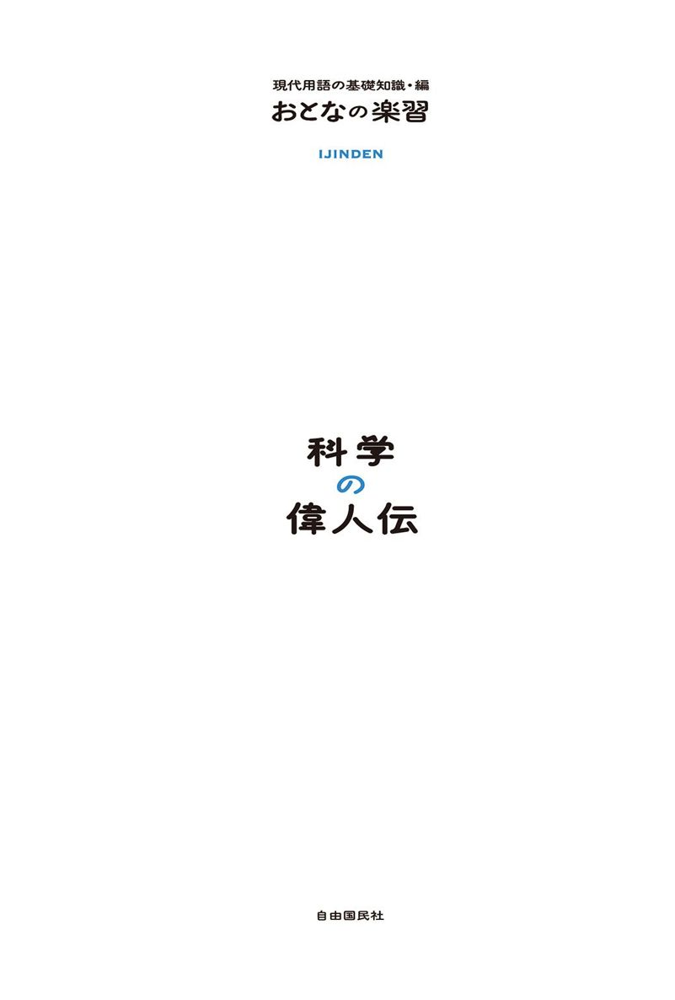
まえがき
科学は難しい。そう思っている方も多いのではないでしょうか。科学はほんとに難しいのでしょうか。
その通り、科学は難しいのです。でも、みんなが科学者になるわけではありません。では、科学者にならないのなら、科学なんて勉強しなくてもいいし、また知らなくてもいいのでしょうか。そんなことはありません。科学は「知」の営みであり、その本質は、文学や歴史や哲学と同じです。
古代ギリシャ時代の科学者は、みな科学者であると同時に、哲学者であり芸術家でした。「人間とはなんぞや」を考えることと、「宇宙とはなんぞや」と考えることは、同じ精神の営みなのです。
近代の終わり（18世紀）頃までは、ヨーロッパでも、科学者は文学者であり哲学者であり、中には政治家でもあった科学者もいます。
たとえば、17世紀中頃に活躍したフランスのブレーズ・パスカルは、「パスカルの法則」を発見した科学者であると同時に、『パンセ』を著した哲学者でもありました。また、雷の正体が電気であることを発見した、18世紀アメリカの科学者ベンジャミン・フランクリンは実業家でもあり、また独立宣言の起草にも関わった高名な政治家でもありました。
科学者になって科学を極めようとするなら、数学・物理・化学をしっかり勉強しなければなりません。でも、みんなが科学者を目指しているわけではありません。科学者を目指さないなら、難しい数学や物理は、そんなに深く理解する必要はないのです。
大切なことは、科学の面白さ、わくわく感を感じることです。推理小説を夢中になって読み進んでいくように、科学に好奇心をくすぐられればそれでいいのです。
そのように考えれば、科学は決して難しくはありません。小説を読むように、あるいは、素晴らしい絵画を見るように、科学に感動し、そしてその感動を元に思索できるようになること。それが、「非」科学者にとっての科学なのです。
科学者は、数学を使って会話をします。その方が、素早く正確に矛盾なく内容を他の科学者に伝えることができるからです。
しかし、私たち「非」科学者は、数学を使う必要はありません。言葉を使って科学を語ることができるからです。言葉で科学を語ろうとすると、数式よりも、何倍も何百倍もまた時として何千倍もの文字を必要とします。コミュニケーションに時間がかかり正確さも今ひとつかもしれません。しかし、それでも科学の核心に迫ることができるのです。
現在、科学技術は非常に高度に発達し、一般の人の理解を超えているところも多々あるでしょう。しかし、科学技術のおかげで、私たちの快適で便利な生活が維持できているのです。科学なんてそれほど重要ではないのではないか、と感じている人も多いでしょう。科学技術に国の予算を投じるくらいなら、もっと別の面に、という考え方もわかります。しかし、科学技術をおろそかにすると、未来はないのです。
今、一般の人に必要なのは、「科学のたしなみ」だと思います。たとえば、「量子力学について説明しろ」と言われても、説明できなくてもいいのです。それが、現在の科学技術のどんなところに活かされていて、将来どんなことができるようになるのか。そういった「たしなみ」を身につけるだけで、日本の将来は明るくなるでしょう。
本書は、もう忘れてしまった中学レベルの理科の知識をさらっとおさらいし、最先端の科学技術を知るための「科学のたしなみ」を身につける第一歩になればいいな、と思って書きました。
科学の偉人伝 もくじ
エヴァンジェリスタ・トリチェリ（1608 ～ 1647）Evangelista Torricelli
ブレーズ・パスカル（1623 ～ 1662）Blaise Pascal
アラン・チューリング（1912 ～ 1954）Alan Mathison Turing
ジョン・フォン・ノイマン（1903 ～ 1957）John von Neumann
ジョージ・ガモフ（1904 ～ 1968）George Gamow
アーノ・ペンジアス（1933 ～）Arno Allan Penzias
ジェームズ・ワトソン（1928 ～）James Dewey Watson
フランシス・クリック（1916 ～ 2004）Francis Harry Compton Crick
モーリス・ウィルキンス（1916 ～ 2004）Maurice Hugh Frederick Wilkins
ウィリアム・ショックレー（1910 ～ 1989）William Bradford Shockley
ジョン・バーディーン（1908 ～ 1991）John Bardeen
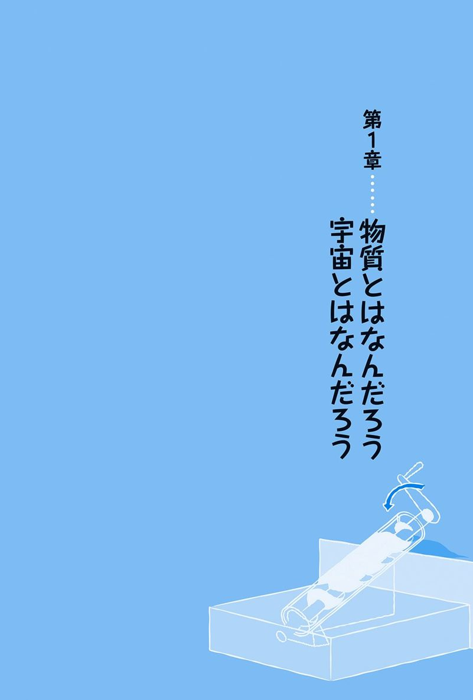
第１章
物質とはなんだろう 宇宙とはなんだろう
古代ギリシャの科学者たちは、自然を観察して、そこに潜む法則性を見つけ出し、科学の基礎を築いていきました。彼らは、気象の変化、水の流れ、燃える炎、そして空を見上げて太陽や月や星の動きを眺めながら考えました。
物質とはなんだろう？ 宇宙とはなんだろう？
その頃はまだ、現在のように科学が進んでいませんでしたから、自然とはどういうものなのか、はっきり分かっていたわけではありません。観測技術も実験技術も未熟でした。ですから、当時の科学は哲学的な要素もあわせ持っていたのです。
哲学というのは、思考によって事象を解釈したり証明したりすることです。彼らは科学者であると同時に哲学者でもあったのです。
ギリシャの科学者たちは一生懸命に考えました。考える力は、今も昔も変わりません。考え抜くことによって、科学が少しずつ発達していきました。
この章では、古代ギリシャの科学者を見ていきたいと思います。

01
ピタゴラス
（B.C.582～B.C.496）Pythagoras
万物の根源は数である
古代ギリシャは、紀元前600年頃から紀元300年頃に、ヨーロッパ南東部のバルカン半島とその周辺で栄えた国です。ポリスと呼ばれるいくつもの都市国家が集まってできた国です。都市国家とは、都市が一つの独立した国のようになっている国のことです。古代ギリシャのポリスは交易が盛んで、経済が発達しており、市民は豊かに暮らしていました。
当時の科学者は、天体の運行や気象の変化、火や水など、身近にある物や現象に強い興味を持っていましたが、実験や観測の方法が十分確立していなかったため、実験によって証明するのではなく、論理的・抽象的に考えることが科学的思考の中心でした。そのため、科学は哲学でもあり、たいていの古代ギリシャの科学者は、科学者であると同時に哲学者であり、文学者・芸術家でもあったのです。
さて、古代ギリシャの科学者のうちで、もっとも有名な一人がピタゴラスです。ピタゴラスは、古代ギリシャ時代初期のイオニア時代（B.C.600～B.C.500）の人で、タレスに学びました。タレス（B.C.624～B.C.546）は、古代ギリシャの記録に残る最初の科学者で、天文学を研究し日食を予言したといわれています。夜空の星を見ながら歩いていて、溝に落ちてしまった、という有名なエピソードが伝えられています。遠い天体のことは詳しいが自分の足元のことはよく知らなかった、というオチです。
ピタゴラスは、物事の根源（アルケーという）は数であると考えました。「1、2、3、4...」といった自然数です。ピタゴラスは、自然界にあるものはどんなものでも数で表せると考えました。たとえば、三角形は、図のように、上から順に「1＋2＋3＋4＋...」、正方形は、「1＋3＋5＋7＋...」と表すことができるというわけです。
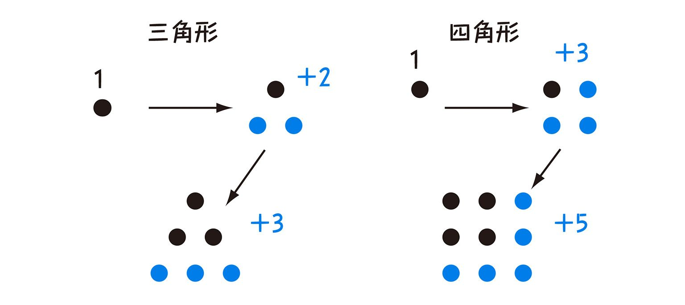
ピタゴラスといえば、「ピタゴラスの定理」が有名です。ピタゴラスとその弟子たちが発見したといわれています。
ピタゴラスの定理とは、「直角三角形の斜辺の長さの二乗は、他の二辺のそれぞれの長さの二乗の和に等しい」というものです。言葉で言うよりも、数式で見たほうが分かりやすいと思います。
直角三角形の斜辺の長さをc、他の二辺の長さをa、bとすると、３つの辺の間には、
a2＋b2＝c2
という関係が成り立ちます。
ピタゴラスはどうやってこの定理を発見したのでしょうか。いろんな説がありますが、一説によれば、ピタゴラスとその弟子たちが、同じ大きさのタイルが敷きつめられた床に線を引いているうちに思いついたのだといわれています。
たしかに、方眼紙に直角三角形を描いて、それぞれの辺を一辺とする正方形を三角形の外側に描いてみると、なんとなく直感的に、aの二乗とbの二乗を足した広さは、cの二乗くらいかな、という感じはします。
定理であるためには、二辺の二乗の和が斜辺の二乗に等しいことを証明しなければなりません。定理とは、「すでに真なりと証明された一般的命題」であるからです。
ピタゴラスの定理はどのように証明すればいいのでしょうか。実は、ピタゴラスの定理の証明は100以上もの方法が知られています。そのうちの二つを紹介しましょう。
正方形を使った証明
次の図のように、４個の直角三角形に囲まれた小さな正方形を描きます。４個の直角三角形は大きな正方形をつくり、直角三角形の斜辺は小さな正方形をつくります。
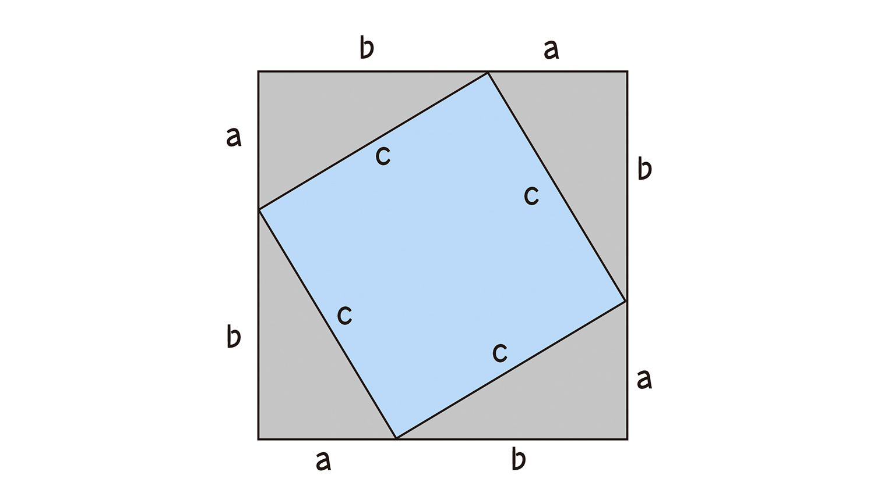
大きな正方形の面積は、（a＋b）2、小さな正方形の面積はc2です。また、４つの直角三角形の面積は、（a×b）÷2の４倍ですから、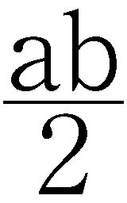×4＝2abとなります。
大きな正方形の面積＝小さな正方形の面積＋４つの直角三角形の面積ですから、
（a＋b）2＝c2＋2ab
となり、これを整理すると、
a2＋b2＋2ab＝c2＋2ab
a2＋b2＝c2
となります。
アインシュタインの証明（相似を使った証明）
これは、相似を使った証明法で、アインシュタインが見つけたといわれています。おさらいをしておくと、相似とは、図形を拡大または縮小したときぴったりと重ねることができることをいいます。
では、証明です。
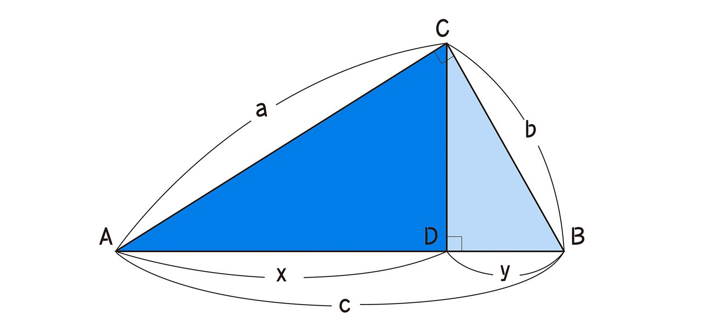
図の三角形ABC、ACD、CBDは相似なので、次のような関係があります。
c：a＝a：x
c：b＝b：y
x＋y＝c
だから
a2＝cx b2＝cy
x＝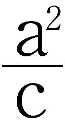 y＝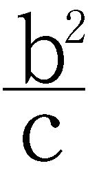
となるので
＋＝c
これにより
a2＋b2＝c2
が成り立つ。
ピタゴラスが、1、2、3、...といった自然数を万物の根源と考えたことは最初に書きましたが、困った問題が起こりました。
一辺の長さが１の正方形に対角線を引いてできた直角三角形の斜辺の長さを求めようとすると、12＋12＝x2となってxを自然数で表せなくなってしまうのです。整数の比で表すことができないので、このような数を無理数といいます。現在は、平方根を使って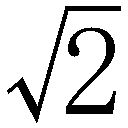と表すことができますが、ピタゴラスは無理数を嫌っていました。すべての数は、整数の比で整然と表せると考えていたのです。

02
デモクリトス
（B.C.460頃～B.C.370頃）Demokritos
物質はアトムからできている
物質は何からできているのだろう？ 普段はあまり考えないことかもしれませんが、気になりだしたらすごく気になるテーマです。
現在の私たちは、物質を細かく分割していくと、最後は原子にたどり着くということを知っています。しかし、それも学校で教わったり本を読んだりして得た知識であって、そもそも原子は小さすぎて目では見えません。ただし、「走査型トンネル顕微鏡」という電子顕微鏡を使うと、原子一個一個を直接見ることができます。
しかし、電子顕微鏡どころか普通の光学顕微鏡さえ発明されていなかった古代ギリシャ時代には、原子を見ることなどできません。そのため、ギリシャの科学者たちは、思索によって物質の根源を探りました。
タレス（B.C.624～B.C.546）は、物質の根源となる物質（アルケー）は水であると考えました。万物は水から生まれ水に還るのではないかと考えたのです。また、同時代のエンペドクレス（B.C.490頃～B.C.430頃）は、物質は「火・水・空気・土」の四つの元素からできているという四元素説を唱えました。アリストテレス（B.C.384～B.C.322）も四元素説をとっていました。
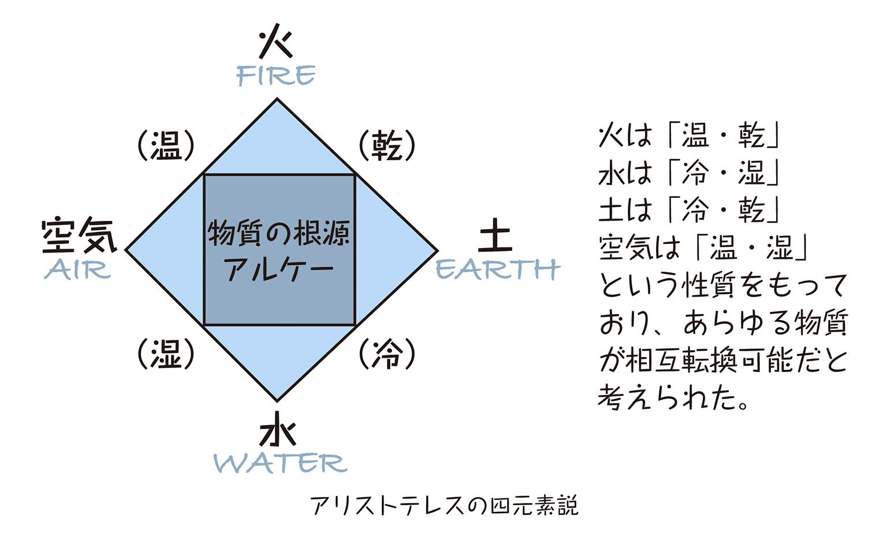
すべての物質は、「火・水・空気・土」の四元素からできている、と言われても、いまは中学生でも、そんなことあるかな、と疑問に感じると思います。
そのように、科学が発達していなかった古代ギリシャ時代でしたが、デモクリトスは、すべての物質は物質を構成する根源的な極微の粒子「アトム」と真空からできていると考えました。そして、「アトム」どうしがさまざまな組み合わせで結びついて、多様な物質ができるのだと考えました。これを「デモクリトスの原子論」といいます。アトム（atom）とは、ギリシャ語でこれ以上分割できないものという意味です。現在も、原子のことを英語でアトム（atom）といいますが、この言葉の元になったのが、デモクリトスのアトムなのです。
しかし、当時の原子論は直感と想像力によるもので、デモクリトスが考えた原子は、陽子と中性子でできた原子核の周りに陽子と同じだけの電子があるという現在知られている原子の姿とは異なったものでした。
デモクリトスの原子論は、その後、長い間忘れられていましたが、18世紀にラボアジェやドルトンという化学者が登場し、元素というものの存在を考えると化学変化が合理的に説明できることに気がつきました（→「14 アントワーヌ・ラボアジェ」）。ここから、近代的な物質の科学が始まったのですが、この元素という概念を最初に提示したのが、古代ギリシャのデモクリトスだったのです。
デモクリトスの原子論は、アトムとアトムがない空間である「真空」を不可分のものとして考えていました。アトムが運動する場として空虚（ケノン）があると考えました。物質はアトムが結合したり分かれたりしてでき、アトムがないところにも、何もない空間があると考えたのです。
当時は、まったく何もない空間、つまり真空はないものとされていました。ないものを想定すると、論理が展開できなくなったからでしょう。アリストテレスは、「自然は真空を嫌う」という言葉を残しています。
この「真空は存在しない」という考え方は、17世紀まで続いていきました。17世紀のイタリアの科学者トリチェリが、水銀を入れたガラス管を水銀を入れた容器に立てて大気圧を計り、ガラス管の先に初めて真空をつくり出したのは1643年のことでした（→参照）。
このように、デモクリトスは、物質はみな原子という根源物質に還元できるという、還元論・唯物論の元祖ともいえます。もちろん、それは今の時代の解釈で、当時のデモクリトスは、そんなことはこれっぽっちも考えていなかったでしょうが......。
デモクリトスは、難しいことを考えていた学者ですが、性格は快活な人で、よく笑うため「笑う人」とも呼ばれていました。

03
アルキメデス
（B.C.287～B.C.212）Archimedes
実験と観測を重んじた科学者
アルキメデスは、古代ギリシャを代表する科学者です。抽象的な思考によって自然科学を論ずる当時のギリシャの科学者の中にあって、アルキメデスは、実験や観測を重んじる科学者でした。科学者であると同時に有能な技術者でもあったのです。
アルキメデスの父は天文学者でしたから、子どもの頃から天体に関心が深く、太陽・月・惑星の動きを調べて、天象儀（プラネタリウム）をつくったと伝えられています。この機械の動力は水力でした。彼が発明した機械の一つに、らせん式揚水機というものがあります。水を汲み上げる機械で、「アルキメデスのスクリュー」とも呼ばれています。
この機械は、木の筒の中に木製のネジのような形をしたスクリューが入っていて、スクリューを回転させることで、水を下から上に向けて移動させ、水を汲み出す仕組みです。
現在は、どこにでも使われているありふれたネジですが、アルキメデスより前には、ネジはなかったといわれています。アルキメデスは、ネジの原理を発見し、さらにそれを揚水機という実用的な機械に応用したのです。
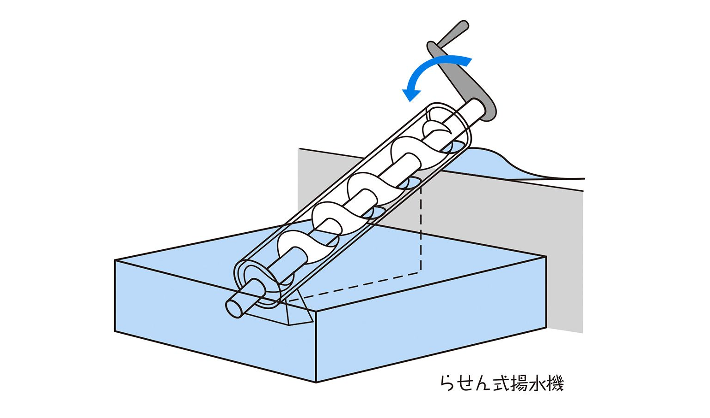
アルキメデスのらせん式揚水機と同じネジの原理で働く揚水機は、現在も活躍しています。また、船のスクリューや飛行機のプロペラも、ネジの原理を利用したもので、水や空気を前から後ろに加速して送り出す働きをしています。
当時のギリシャは、ぶどう酒やオリーブ油の製造が盛んでした。ぶどうの粒やオリーブの実の加工には、効率よく押しつぶす機械が必要です。この機械にもネジが使われていました。万力のように、ネジを回して板の間に置いたオリーブの実をつぶす「ネジプレス機」なども作られました。
アルキメデスは、ほかにも、てこの原理・円周率の計算法・浮力の原理など、数多くの発明・発見をしています。
てこの原理
てこは、棒の端に小さな力を加えて、反対側の端に大きな力を発生させる道具です。棒を支える支点の位置を変えると、発生する力の大きさを変えることができます。古代ギリシャ時代には、すでにてこが使われていました。
アルキメデスは、てこが大きな力を生み出す原理を数学的に証明しました。
てこは、支点から同じ長さのところに同じ重さのおもりを乗せるとつり合います。支点からの長さを右と左で変えてつり合わせるときは、短くしたほうに重いおもりを乗せてつり合わせます。つまり、支点からの距離と重さは反比例するのです。
式で表すと、「a × W1 = b × W2 」となります。
ですから、支点からの長さが長いほうの端を持って、エイっと力を加えると、加えた力よりも大きな力が、反対の端に発生します。
円周率の計算
円周率（π）とは、円周の長さと円の直径の比のことで、3.14......と４の後に無限に数が続きます。円周率は、4000年も前の古代バビロニアの時代から計算が試みられていました。しかし、3.1まではだいたい求めることができるのですが、それ以上は、3.12なのか3.16なのかまでは、分かっていませんでした。
円周率は約3.14であると、初めて"ほぼ"正確に求めたのが、アルキメデスでした。彼は、円に内接及び外接する正96角形の周を計算して、円周率は、「3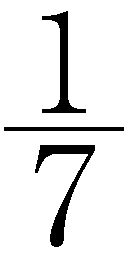 > π > 3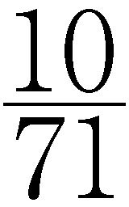」であることを発見しました。小数に直すと、「3.14286 > π > 3.14086」となります。
円周率は、3.14159......と続きますから、アルキメデスは小数点以下第２位までの値を正確に求めたことになります。
アルキメデスが初めて正確に求めたので、円周率を「アルキメデスの数」と呼ぶこともあります。
現在では、円周率をコンピュータで計算することができ、小数点以下何桁まで求めることができるかの競争が行われています。2009年にフランスのファブリス・ベラールが２兆6999億9999万桁まで計算しましたが、これがいまのところ世界一です。
浮力の原理
シラクサの王ヒエロン二世は、金細工職人に純金を渡して、金の冠をつくるように命じました。王冠ができましたが、職人は、混ぜ物を入れて、金をいくらか盗んだらしい、という噂がたちました。そこで、ヒエロン王は、アルキメデスに、混じり物が入っていないかどうか、調べるように命じました。
アルキメデスは、王冠に使ったのと同量の金のかたまりと王冠をてんびん秤に吊るしてみましたが、てんびん秤はつり合い、重さは変りませんでした。重さは同じだし、大きさも同じにしか見えません。アルキメデスは困ってしまいましたが、なんとか調べる方法があるはずだと日夜考え続けました。
ある日、お風呂に入ったときに、湯船からお湯がどっとあふれ出るのを見て、はたと思いつきました。物体が水を押しのけるとき、押しのけた水の量だけ軽くなっているのではないかと。
このとき、アルキメデスはうれしさのあまり裸のまま表に飛び出し、「エウレーカ、エウレーカ！（わかったぞ、わかったぞ）」と叫びながら走ったといいます。
アルキメデスは、てんびん棒の両側に純金のかたまりと王冠を吊るしてバランスを取り、そのまま純金と王冠を水の中に入れてみました。すると、王冠のほうが軽くなっててんびん棒のバランスが崩れてしまいました。こうして、王冠には金よりも軽い混ぜ物が入っていることを証明したのです。
アルキメデスの原理は、「液体の中に固体を浮かべたとき、その固体が押しのけた液体の重さと等しい浮力を受ける」というものです。
第２章
発明が歴史を変えた
人類の文明を発達させていったのは、人類のあくなき好奇心と探求心です。空を見上げて星の動きを観察し、人類をとりまく世界はいったいどういう世界なのかを考え続けました。しかし、科学は自然界の真理を見せてくれるかもしれませんが、それだけでは人類の生活は豊かになりません。人類の生活に変化を与えるのは、科学を利用した技術にほかなりません。
400万年前に地球上に生まれた人類は、火を使うことを覚え、石器を発明し、少しずつ生活を豊かにしていきました。科学の発見は、新しい道具の発明につながり、技術の進歩が人類の文明を進歩させていったのです。
この章では、世界を変えた大発明についてみていきたいと思います。
とりあげるのは、紙・火薬・羅針盤・活版印刷の４つです。紙が発明されたことで、知識を記録し後世に伝えることができるようになりました。火薬は、土木工事に使われて、川の流れを変え、農地に水を導き、洪水の被害を食い止めるのに役立ちました。残念ながら、戦にも使われました。羅針盤は、航海で役立ち、人間の行動範囲が全地球に及ぶようになりました。そして、活版印刷は、知識や情報を広く伝えるのに役立ちました。16世紀頃から科学の進歩がスピードアップしていったのは、活版印刷によって情報の伝達量と伝達速度が増加したことと情報の確実性が高まったことが関係しています。

04
世界を変えた大発明
紙の発明 火薬の発明
羅針盤の発明 活版印刷の発明
地球上に人類の祖先が誕生したのは、およそ400万年前です。200万年前には、石を砕いて石器を作り、狩猟が行われるようになりました。50万年ほど前になって、人類は火を使うことを覚えました。火を使うことで、動物の肉を調理したり、冬の寒さをしのいだりすることができるようになりました。４万年ほど前には、それまでの旧人（ネアンデルタール人）に代わって新人（クロマニヨン人）が登場してきました。
１万年前には農耕が始まり、作物を貯蔵することも覚え、人類は少しずつ豊かになっていきました。豊かになり、人口が増えると、社会を維持していくためにいろいろな規則や制度ができていきました。こうして、初めて文明が生まれたのが紀元前3500年くらい、今から5500年ほど前のことです。
いまの中東のイラクあたりで、メソポタミア文明が生まれました。メソポタミア文明は、楔形文字を発明し、灌漑技術や暦法が発達しました。
ナイル川流域にはエジプト文明が栄えました。ピラミッドなどの巨大建築物を造る建築技術、測量技術、暦法などが発達しました。
この他、インドのインダス川流域にインダス文明、中国では黄河や揚子江流域に中国文明が生まれました。
400万年前の人類誕生以来、最初は緩やかに発達していった文明ですが、5000年ほど前に世界の各地でほぼ同時に花開いたのは、それまでの発明や発見の成果を応用した技術（テクノロジー）が進歩したからです。
火・文字・石器・青銅・暦法など、発明と発見は新しい技術を呼び起こし、技術が人類の暮らしを豊かにしていきました。
世界の四大発明といわれているものに、紙の発明・火薬の発明・羅針盤の発明・活版印刷の発明があります。
紙が発明されたことによって、知識を記録し、広く後世に伝えることができるようになりました。火薬が発明されたことによって、山を削って農地を拡げたり、道路や建物を造ったりすることができるようになりました。羅針盤の発明によって、大海原を迷わずに航海して目的地に到着できるようになりました。そして、活版印刷の発明によって、知識を多くの人々に伝えることができるようになりました。
新しい道具や機械などを発明することによって、人類社会は進歩していくことができたのです。
紙の発明
文字を記録する道具として、紙ができる前には次のようなものが使われていました。メソポタミアで楔形文字を書くのに用いられた粘土板。古代エジプトで用いられたパピルス。パピルスは、カミガヤツリという植物の茎の表皮をはがして乾かしたものです。ヨーロッパには動物の皮から作った羊皮紙、日本や中国では木や竹から作った木簡・竹簡などがありました。
紙は植物の繊維を水の中で絡ませて薄く平たく伸ばして乾かしたもので、最古の紙は、中国甘粛省で出土した、紀元前150年頃のものだといわれています。その後、紙は改良が重ねられ、西暦105年頃に、中国の蔡倫（50～121）が、製法を完成させたといわれています。
紙は、それまでの木簡・竹簡などと違ってかさばらないという大きな特長がありました。かさばらないので、一定の大きさの書庫に、より多くの情報を保存しておくことができるようになりました。紙が発明されたことで、情報の記録・伝達の能力が抜群に向上したのです。
火薬の発明
火薬を発明したのは誰なのか分かっていませんが、中国の唐代（618～907）の書物の中に、「硝石・硫黄・木炭」を混ぜ合わせて黒色火薬を作る方法が書かれていますから、その頃にすでに火薬が使われていたと思われます。13世紀になると、矢に火薬をつめたロケット花火のような武器が登場し、その後、鉄砲が登場します。火薬は武器に利用され、武力が世の中を動かす大きな力となっていきました。
19世紀になると、黒色火薬に代わって、ニトロセルロースやダイナマイトなどの近代的な火薬が発明されます。破壊力は大きくなり、鉱山の採掘のための発破や、大規模な土木工事などができるようになりました。
羅針盤の発明
羅針盤とは磁気コンパスのことです。磁石の性質を利用して方位を知ることができる道具です。
羅針盤は11世紀に中国で発明され、12～13世紀にヨーロッパで改良されました。羅針盤は船の航海の際に、針路を知る装置として欠かせないもので、羅針盤が発明されたおかげで、航海術が発達し、15世紀からの大航海時代へとつながっていきます。
1492年、イタリアのコロンブス（1451～1506）がアメリカ大陸を発見。1519年から22年にかけて、ポルトガルのマゼラン（1480～1521）が、人類史上初の世界一周を実現しました。世界をまたにかけて航海が行えるようになったことで、世界的な交易が進み、資源や農作物の売り買いが行われるようになって、経済と産業が発達していきました。
活版印刷の発明
1445年頃、ドイツのヨハネス・グーテンベルク（1400頃～1468）は、活版印刷の技術を発明しました。活版印刷というのは、文字一個一個を金属や木の小さな棒の先に左右逆に彫り込んだ活字を並べて印刷用の板を作り、そこにインクをつけて、紙を押し当てて文字を印刷するものです。活版印刷はグーテンベルク以前からあったといわれていますが、それを完成させたのがグーテンベルクで、彼は聖書を印刷して広く普及させました。
つい最近（30年ほど前）まで、活版印刷によって本や雑誌が印刷されていましたが、現在は、DTP（デスクトップ・パブリッシング）といって、コンピュータで組版を作って印刷するようになったので、活版印刷はほとんどなくなりました。しかし、現在の印刷技術も、本を大量生産するという目的はグーテンベルクの時代となんら変わりありません。活版印刷が登場したことで、それまで大量生産には向かない木版によって細々と引き継がれてきた情報や知識を、多くの人に広めることができるようになりました。
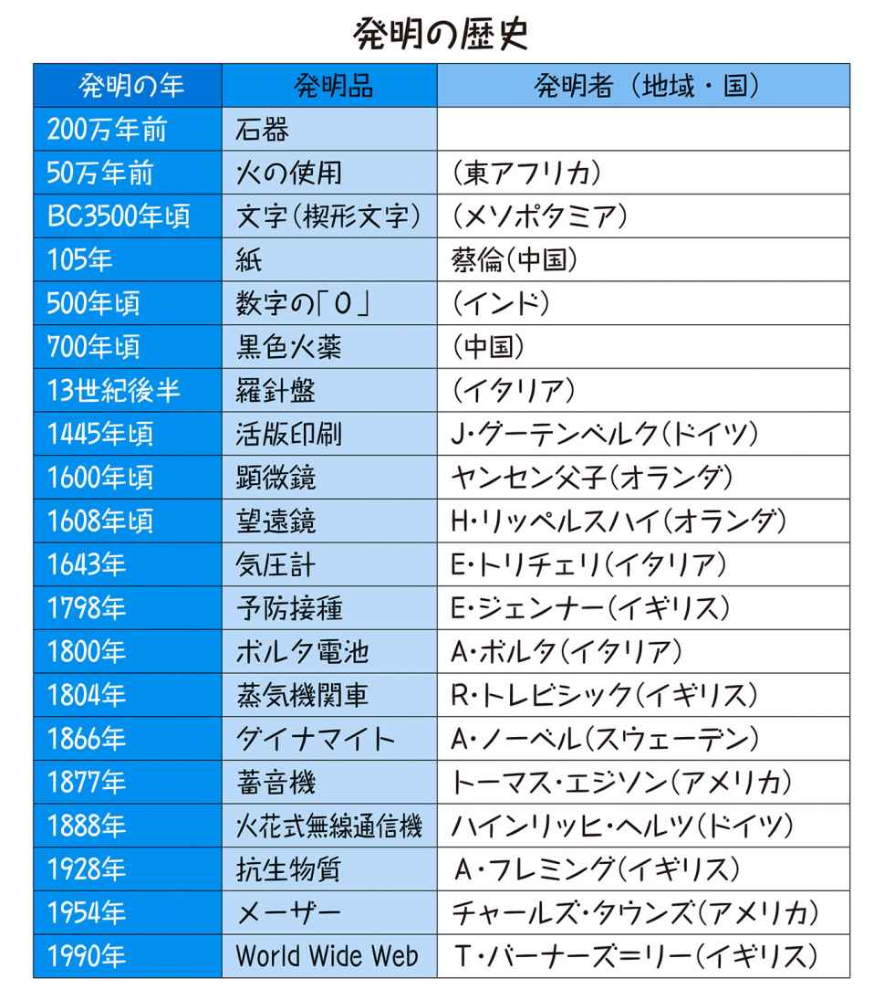

05
レオナルド・ダ・ビンチ
（1452～1519）Leonardo da Vinci
科学から技術へ
レオナルド・ダ・ビンチは、ルネッサンス時代を代表するイタリアの芸術家・科学者です。一般には科学者としてよりも芸術家として知られています。美術史上もっとも有名な絵画といってもよい『モナ・リザ』の作者として知らない人はいないでしょう。この時代は「ルネッサンス」と呼ばれ、暗い中世に別れを告げ、古代ギリシャ・ローマ時代の芸術性や合理性に立ち還ろうという時代でした。
この時代は、ミケランジェロ（1475～1564）やラファエロ（1483～1520）といった美術の巨匠が活躍し、また、コロンブスが新大陸を発見し（1492年）、バスコ＝ダ＝ガマがインド航路を発見するなど（1498年）、新しい気分がみなぎっていた時代でした。
ダ・ビンチは、フィレンツェ近郊のビンチ村に生まれました。レオナルド・ダ・ビンチという名前は、まさに「ビンチ村のレオナルド」という意味です。ダ・ビンチは、15歳で、当時すでに有名な芸術家として知られていたベロッキオ（1435-1488）の工房に入り、芸術家としての基礎を学びました。
ダ・ビンチは、絵がとても上手でしたが、それは、自然を注意深く観察する力が優れていたからでした。少年時代から、動物や植物や人間を描くのがとてもうまかったといいます。
『モナ・リザ』や『最後の晩餐』などを見てみると、光がやってくる方向と反射していく方向をよく研究して描いていることがわかります。また、遠くにある物は近くにある物に対して、どのように見え方が違うのか、ということも研究しました。遠くの物は、小さく見えるだけでなく、明るさやぼやけ具合も違って見えます。ダ・ビンチは、そのような研究を元に、空気遠近法という描き方を編み出しました。
『モナ・リザ』の背景に描かれている、遠くの木々や川の流れなどが、絵画的表現でありながらも自然でリアルな印象を見る者に与えてくれるのは、自然研究に長けたダ・ビンチならではの描き方をしているからです。
ダ・ビンチは、このように自然研究に優れ、多くの研究を行いました。しかも、ただの自然科学者ではなく、それを工学的に応用して形あるものを創り出そうという強い意志を持っていました。彼は科学者であったばかりでなく技術者でもあったのです。16世紀以降、科学はすばらしい発展を遂げますが、これは科学が工学を生み出し、工学が新しい実験器具や観測器具を生み出していったからです。実験と観測によって、自然現象を客観的に調べ、記録を残すことができるようになったおかげで、ほかの多くの科学者がそれを再検証できるようになりました。こうして、ダ・ビンチ以降、科学と技術はぐんと発達していったのです。
ダ・ビンチは、科学から技術へと変わっていく時代の先駆者であったといえるでしょう。
ダ・ビンチの関心は、力学・流体力学・力と運動・数学・光学・機械工学・水力学・解剖学・動物学・植物学と多方面にわたっています。杉浦明平訳『レオナルド・ダ・ヴィンチの手記』（岩波文庫）の下巻は、科学論と技術論を集めたものですが、ここに、ダ・ビンチの科学に対する考え方が記されています。
それを読むと、ダ・ビンチの緻密な観察と実験に基づく研究手法は、現代の科学の考え方と同じものであることがわかります。ルネッサンスの時代とはいっても、当時はまだキリスト教的な世界観・価値観が人々の心を強く支配していましたから、その中で、これだけ、自然を冷静な目で見ていたとは驚きです。
『レオナルド・ダ・ヴィンチの手記』の科学論に、「経験」と題された項目があります。
「知恵は経験の娘である」
「この問題について一般法則を立てるまえに、二度三度それを試験してその試験が同一結果を生ずるか否かを観察せよ」（同文庫下巻P.9）
これは、「知識とは、何度も繰り返された実験によって客観化されたものの結実である。ある現象を見て、そこに一般的な法則を見出すためには、何度も実験して、いつも同じ結果が出るかどうかを観察することが大切である。」というふうに解釈できます。
たとえば、重力については、次のように書いています。
「（重さを持つものが地球の中心に向かって動くのは、）抵抗物をもたぬ重さは最短経路を通って落下しようとするが、そのもっとも近い場所は地球の中心だから」（同文庫P.33）
重力は、ニュートンが登場して初めて体系化されましたが（→参照）、ダ・ビンチは、その100年も前に重力について考察していたのです。
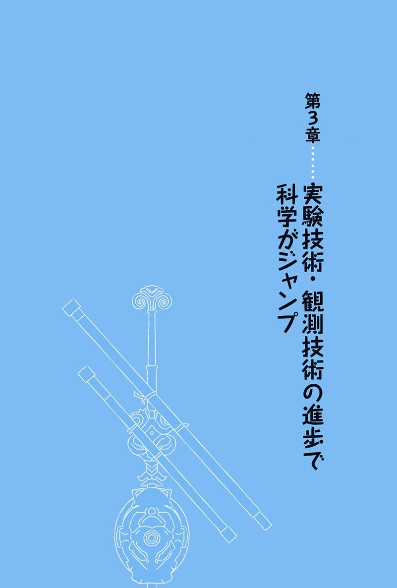
第３章
実験技術・観測技術の進歩で科学がジャンプ
16世紀には、ガリレイ、ニュートンといった偉大な科学者が登場し、その後、近代的な科学が急速に発展していきました。これは、工学が発達して、実験技術・観測技術が進歩していったからです。
ガリレイが、地動説を確信するようになったのは、天体望遠鏡で木星の衛星を観測して、衛星が木星の周りを回っているのを自分の目で確認したからです。もしも、望遠鏡がなかったら、地動説はもう少し遅れて登場したかもしれません。
ガリレイの望遠鏡は、有効径26mmの小さな屈折望遠鏡でしたが、木星の衛星のほか、月のクレーター、太陽黒点、金星の満ち欠けなど、それまでまったく知られていなかった驚きの世界を見せてくれました。また、ミクロの世界を覗くことができる顕微鏡も、17世紀初め頃に発明されました。
望遠鏡や顕微鏡は、肉眼では見えないものを見えるようにする道具です。
また、18世紀最後の年には、ボルタ電池が発明され、電気を自由に使えるようになりました。この結果、電磁気学が大きく進歩していきます。
この章では、そのような近代科学の曙の時代をみていきたいと思います。

06
ガリレオ・ガリレイ
（1564～1642） Galileo Galilei
天体望遠鏡と地動説
石ころと鳥の羽を同時に同じ高さから落とすと、どちらが先に地面に着くでしょうか。試してみると、石ころのほうが先に地面につきます。しかし、これは、石ころが鳥の羽よりも重いから、というわけではありません。鳥の羽が遅く落ちるのは、石ころに比べて空気抵抗が大きいからです。
実際は、重い物体も軽い物体も、同時に落とすと、同時に地面に到達します。16世紀頃はまだ、アリストテレスの、物体の落下速度は物体の重さに比例するという説が信じられていました。しかし、ガリレイは、ピサの斜塔の上から、同じ大きさの鉄の球と木の球を同時に落とす実験を行い、どちらの球も同時に地面に到達することを証明したといわれています。
ガリレイは落下現象を詳しく調べようとしましたが、高速度カメラのない当時では、落下物の速さは速すぎて、調べることができません。そこで、滑らかな斜面をつくって、そこに鉄の球を転がして球の落下距離と落下速度の関係を調べました。斜面を転がるときのほうが、落下しているときよりも、ゆっくり球が動くので調べやすかったからです。
しかも、ガリレイはこの実験を行うにあたって、球を斜面で転がすことと、自然落下させることは同じであることもきちんと証明しました。もしも同じでなければ、実験の意味がなくなるからです。こうしてガリレイは、「落下距離は落下時間の二乗に比例する」という結論を導き出しました。
ガリレイは、自然の研究のために、実験を重視し、そこから得られたデータを元に客観的に分析するという実証的な手法を用いました。まさに、ガリレイから近代科学が始まったといっていいのです。
ガリレイといえば、地動説を唱えたことで有名です。当時は、キリスト教の世界観が広く信じられていた時代で、あくまでも地球が世界の中心であり、太陽も月も星々も地球を中心として回っていると考えられていました。ガリレイよりも100年ほど前に生まれたポーランドの天文学者コペルニクス（1473-1543）は、肉眼で天体の動きを観測し、1507年頃、「地球は太陽の周りを回っている」とする地動説を発表しました。この考え方は当時の社会に広まり、大きな議論を巻き起こしました。コペルニクスの地動説が広まったのは、グーテンベルク（1400頃～1468）以来、普及していった印刷物というメディアによるところが大きいといわれています。
当時は、論理に論理を重ねて抽象論の極みにまで達していたキリスト教的な世界観（スコラ哲学）に、不満を持つ人々が増えていました。そのため、古い天動説をひっくり返すコペルニクスの地動説は、当時の人々に共感をもって受け入れられたのです。
その後、地動説派のドイツの天文学者ケプラー（1571～1630）は、惑星の動きを詳しく観察して、惑星の運動に一定の法則があることを見つけました。これを「ケプラーの法則」といいます。ケプラーの法則とは次のようなものです。
「１．惑星は太陽を焦点とする楕円軌道を描く」
「２．太陽と惑星を結ぶ直線は、等しい時間に等しい面積を描く」
「３．惑星の公転周期の二乗は、太陽からの平均距離の三乗に比例する」
これは、太陽の周りを地球が回っていると考えると、ぴったりと当てはまる法則です。
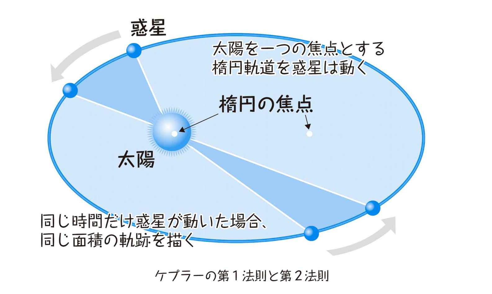
地動説を否定する学者たちは、「地球が動いているのなら、塔の上から石を落としても、真下には落ちないはずだ」と言いました。地球が東に動いているなら、落とした石は、西側にずれて落ちるはずだというのです。
これに対してガリレイは、走っている船のマストの上から物を落とすと、マストの真下に落ちる。だから、地球が動いていても、塔の上から落とした石は、真下に落ちるのだと反論しました。これは「ガリレイの相対性」と呼ばれ、後の相対性理論（→「23 アルバート・アインシュタイン」）につながる考え方です。
さて、ガリレイの地動説を決定的にしたのが、天体望遠鏡の登場です。望遠鏡は、1608年頃に、オランダのレンズ技師リッペルスハイ（1570頃～1619）によって発明されたといわれています。
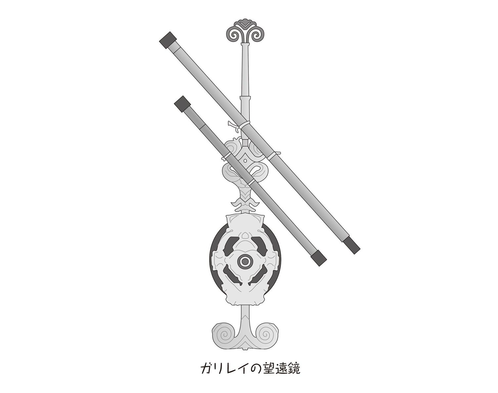
ガリレイはいち早くこの技術を取り入れ、1609年に自ら望遠鏡を作り上げました。対物レンズに凸レンズ、接眼レンズに凹レンズを使った望遠鏡で、今の天体望遠鏡と違って正立像で見ることができました。しかし、視野は狭く、倍率もあまり高くできないという欠点がありました。対物レンズの口径は26mm、倍率は14倍でした。これは、現在の小型の双眼鏡くらいの性能です。といっても、現在のレンズのようにコーティングはしてありませんし、光学ガラスの質も悪く視野も狭くて暗いものでした。しかし、この望遠鏡は、肉眼だけでは見ることができない天体の姿を見せてくれたのです。
ガリレイは、太陽表面の黒点の位置の変化から太陽が自転していること、木星の衛星が木星の周りを回っていることなどを発見し、地動説の正しさをますます確信するようになりました。
望遠鏡という観測機械の登場が、新しい世界を拓いていったのです。
07
エヴァンジェリスタ・トリチェリ
（1608～1647） Evangelista Torricelli
ブレーズ・パスカル
（1623～1662）Blaise Pascal
オットー・フォン・ゲーリケ
（1602～1686）Otto von Guericke
真空の発見
ガリレイの頃から、実験を繰り返して、そこから物理法則を導き出して、工学的な応用を考えるという流れが出てきました。それは時代の変化と密接な関係があります。15世紀から大航海時代が始まり、世界規模の経済が動き出し、航海のための測量技術や造船技術が発達していきました。アフリカやアジアで植民地を手に入れるために兵器が必要なこともありました。工学は必要不可欠なものとなっていたのです。
ガリレイが残した課題に、「井戸の水はなぜ10ｍより深くなると汲み上げることができないのか？」という問題がありました。
ガリレイより44年後にイタリアに生まれ、ガリレイの弟子でもあったトリチェリは、この問題の解明を試みました。水で実験すると、長さが10ｍ以上もの管がいるので、水の約14倍も重い水銀を使って実験しました。1643年のことです。
トリチェリは、長さ1.2ｍほどのガラス管の一方を閉じ、ガラス管の中に水銀を満たして、水銀を入れた容器の上に立ててみました。すると、ガラス管の中の水銀は少し下に下がり、水銀容器の表面から760mmくらいの高さで止まりました。このとき、ガラス管の上部に空間ができました。この空間は、直前まで水銀で満たされていましたから、空間ができたといっても、どこかから空気が入ったわけではありません。つまり、この部分が物質も空気もない「真空」になったのです。古代ギリシャのアリストテレス以来、真空はありえないものとされていましたから、何もない空間である真空を作り出したのは画期的なことでした。
この実験は、「トリチェリの実験」と呼ばれています。
ガラス管の中の水銀の高さが760mmくらいで止まったということは、容器に入れた水銀の上に大気の圧力がかかっているからであるとトリチェリは考えました。こうしてトリチェリは大気に圧力があることを（大気圧）発見したのです。また、水銀柱の高さは、日によってわずかに変化することも確認し、水銀気圧計の発明者ともされています。
圧力の単位トル（Torr）は、トリチェリにちなんで名づけられたものです。また、水が10ｍの高さまでしか上がらないというのは、水銀柱の高さ760mmを14倍（水銀の比重は水の約14倍の重さ）すると約10ｍとなり、水も水銀も同じ大きさの大気圧を受けている、ということなのです。
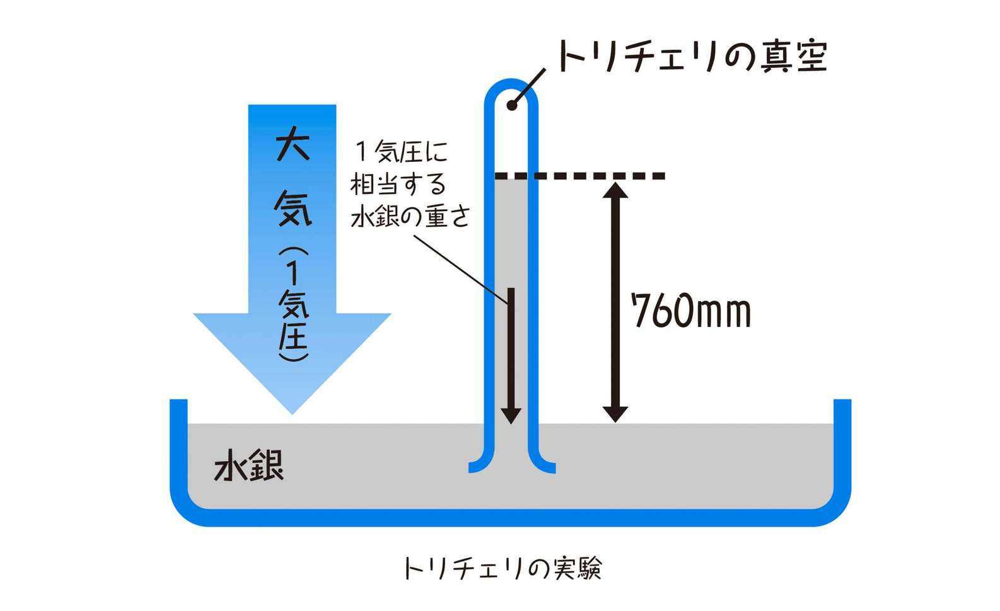
1646年、トリチェリの実験を伝え聞いたパスカルは、1.5mの長さのガラス管をガラス職人に作らせ、自ら実験を行ってトリチェリの実験が正しいことを確認しました。
さらにパスカルは、義理の兄のペリエに頼んで、水銀圧力計をフランス・オーベルニュのピュイ・ド・ドームという山に運び、山のふもとと約1000mの頂上でそれぞれ水銀柱の高さを測ってもらいました。その結果は、ふもとでの水銀柱の高さは約620mm、頂上では約556mmでした。この実験の結果、大気の圧力は、高度が高くなると低くなることが分かったのです。
パスカルは、実験によって、大気に圧力があることを明確にしました。圧力の単位パスカル（Pa）は、パスカルにちなんでつけられています。
さて、パスカルといえば、「パスカルの原理」が有名です。
容器の中の液体の一部に力を加えると、その力は液体のすべての部分に等しく伝わるというものです。この原理を利用すると、重い物を持ち上げるジャッキのような道具を作ることができます。
パスカルは科学者であると同時に、一方では、『パンセ（瞑想録）』を著し、「人間は考える葦である」という名言を残した哲学者であり、数学者でもあった世紀の大天才です。
この頃の真空に関する実験でよく知られているものに、1654年５月８日に帝国議会及び皇帝フェルディナント三世の前で行われた「マグデブルクの半球」という実験があります。ドイツの科学者ゲーリケは、直径約50cmの銅製の半球を隙間のないようにくっつけて、自ら発明した真空ポンプで中の空気を抜いて真空にしました。二つの半球は手ではがそうとしてもピクリともしませんでしたが、左右から８頭ずつの馬で引っ張るとようやくはがれました。
ちなみに、マグデブルクの半球と呼ばれているのは、ゲーリケがマグデブルク市の市長であったからで、実験が行われたのは、レーゲンスブルクという町でした。
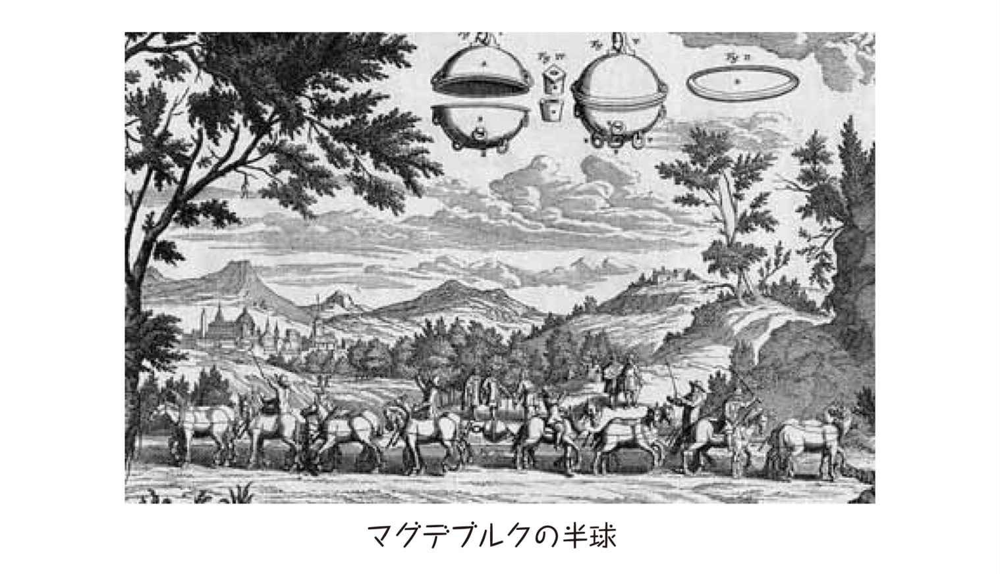
この実験は、真空が実在することと大気圧の大きさを人々に知ってもらうのにとても役立ちました。それまでは、アリストテレス以来、真空は存在しないとされ、同時代では天才哲学者デカルト（1596～1650）までが真空を否定していましたから、真空の発見は科学者だけではなく、人々の心をも変えていったのです。
その後、ロバート・ボイル（1627～1691）とロバート・フックは、この実験を知って自ら真空ポンプを設計して、さまざまな実験を繰り返しました。そしてボイルは「気体の体積と圧力は反比例する」という「ボイルの法則」を見出しました（→「09 ロバート・フック」）。

08
クリスチャン・ホイヘンス
（1629～1695）Christiaan Huygens
土星の衛星と輪の発見
ホイヘンスというと、土星探査機を思い浮かべる人もいるかもしれません。2005年１月14日、欧州宇宙機関の土星探査機カッシーニから切り離されたホイヘンス探査機は、土星の衛星タイタンに着陸し、タイタンの風の音や地表の写真を地球に伝送してきました。
ホイヘンス探査機の名前は、クリスチャン・ホイヘンスからとられています。なぜならタイタンを初めて発見したのが、ホイヘンスだったからです。
ホイヘンスは、1629年生まれのオランダの科学者です。数学・物理学・天文学の分野で業績を残しました。おじいさんくらいの世代にあたるガリレイ（1564～1642）やデカルト（1596-1650）の影響を受けて科学者になりました。デカルトは、ホイヘンスの父親と友達でした。
ホイヘンスは、微積分法の先駆けとなる求積法やサイクロイド曲線などの数学分野、振り子などの物理分野の研究成果が知られています。しかし、なんといっても、ホイヘンスの大きな業績は光学に関する研究でした。
1608年に望遠鏡を発明したのは、オランダのリッペルスハイ（1570頃～1619）ですが、ほぼ同じ頃に、ガリレイは凸レンズと凹レンズを組み合わせたガリレイ式望遠鏡を発明し（→参照）、ケプラーは、対物レンズにも、接眼レンズにも凸レンズを使ったケプラー式望遠鏡を発明しました。ガリレイ式望遠鏡は、正立像を見ることができましたが、視野が狭く暗いという欠点がありました。一方、ケプラー式望遠鏡は倍率を上げても広い視野を得ることができました。ただ、上下が逆さまに見えるという欠点がありましたが、天体を見るときは、逆さまに見えても問題はないので、天体望遠鏡はケプラー式が使われるようになりました。
しかし、レンズには球面収差や色収差といった「収差（像のぼけや歪み）」があります。特に見え具合を悪くするのは、球面収差です。球面収差というのは、レンズが球面をしているために、焦点が一点に集まらないことが原因で起こる収差で、球面収差があると焦点を合わせてもピンボケ像になって見えます。
また、色収差とは光の波長の違い（赤い色は波長が長く、紫色は短い）によって焦点を結ぶ位置が微妙に違うため、像の周辺に青紫色のにじみが見えることをいいます。
ホイヘンスやニュートンは、望遠鏡につき物の収差をなくすために光学の研究を進めました。
ニュートンは、レンズを用いる限り色収差はなくすことはできないと考えて、レンズを使わない反射望遠鏡の製作に取りかかりました。反射望遠鏡は凹面鏡で光を反射させ、空間の一点に焦点を結ばせて、接眼レンズで拡大して見る望遠鏡です。光がレンズを通りませんから、まったく色収差がありません。
ホイヘンスが作った望遠鏡は、対物レンズの口径が5.7cm、焦点距離が約３ｍのチューブレス（筒のない）望遠鏡でした。対物レンズと接眼レンズの間には空気しかないので、「空気望遠鏡」とも呼ばれています。この望遠鏡のF値（焦点距離÷口径）は約53です。F値が大きくなると、視野は暗くなりますが、色収差や球面収差が少なくなってくっきりした像で天体を見ることができます。普通の屈折望遠鏡のF値は８くらいですから、ホイヘンスの望遠鏡はかなり大きなF値といえます。
ホイヘンスの望遠鏡は、筒が長いので、目標の天体を視野に入れるときに苦労したと思いますが、いったん視野に入ったら、かなり鮮明な像を見ることができたと思われます。ホイヘンスは、このような望遠鏡を使って、1655年に土星の衛星タイタンや土星の輪を発見しました。
それより前の1610年にガリレイが自分の望遠鏡で土星の輪らしきものを発見していますが、望遠鏡の性能が低かったので、輪であることまでは分かりませんでした。ホイヘンスが輪を発見してから20年後の1675年、イタリアの天文学者ジョバンニ・カッシーニ（1625～1712）は、天体望遠鏡で土星を観測し、輪は複数の輪からできていることを発見しました。そのため、いちばん外側の輪とその内側の輪の間にある隙間は、彼の名をとって「カッシーニの空隙」と呼ばれています。
欧州宇宙機関のカッシーニ土星探査機は、ジョバンニ・カッシーニにちなんでつけられています。
ホイヘンスは、光は波であるという「光の波動説」を唱えました。1678年には、波動説に基づいて、光波の進み方を説明する「ホイヘンスの原理」を発表しました。また、振り子時計の発明者としても知られています。

09
ロバート・フック
（1635～1703）Robert Hooke
顕微鏡の発明
ロバート・フックは、「フックの法則」（1678年）でおなじみのイギリスの科学者です。フックの法則とは、簡単に言うと「バネに加える力と伸びる長さに比例関係がある」という法則です。昔、八百屋さんが使っていたバネばかりがフックの法則を利用したものです。
フックは牧師の子どもとして生まれ、幼い頃から機械いじりが好きでした。オックスフォード大学を卒業してから、ボイルの法則で有名なロバート・ボイル（1627～1691）の助手となって、ボイルと一緒に空気ポンプを製作し、実験を行いました。1662年発見の「ボイルの法則（温度が一定のとき、気体の体積と圧力は反比例する）」は、このときの実験が元になって生まれました。フックは、空気ポンプの製作や実験というかたちで、ボイルの法則の発見に関わっていたのです。
このほかフックは建築の研究、雨量計・風速計などの気象観測機器の製作、反射望遠鏡や四分儀などの天体観測機器の製作、さらには化石の研究と、幅広い分野で研究を行いました。
科学者フックの特筆すべきところは、実験道具を自ら製作し、実験や観察を何度も行うことによってデータを出すという徹底した実証主義でした。
フックは、７歳年下のニュートンと、大きな科学論争を行ったことが知られています。1672年頃に行われた、光が波であるか粒であるかという光の波動説・粒子説をめぐる論争です。
フックは、光の波動説を唱えました。デカルトやホイヘンスも波動説を唱えていました。
これに対して、ニュートンは、太陽の光がプリズムを通ると、紫色から赤色まで数色に分かれ、さらに、このうちの１色をもう一度プリズムに通してみても、色が分解しないことから、「光の正体は粒子である」とする粒子説を唱えました。
当時は、まだ光の正体がよく分かっていなかったのです。光が波であることは、1807年にイギリスのトーマス・ヤング（1773～1829）が行った光の干渉縞実験によって、ようやく分かりました。
このように、フックは、光について深い関心を持っており、また実験が大好きだったので、自ら望遠鏡や顕微鏡を製作して新しい発見をしています。
その中で、もっとも有名なのが、顕微鏡を使って植物を観察して、植物の組織に細胞があることを発見したことです。彼は、顕微鏡で植物や昆虫を観察して、驚くべきミクロの姿をスケッチした『Micrographia』（『顕微鏡図譜』）という本を出版しています（1665年）。
フックは、コルクの薄膜を顕微鏡で見て、コルクの中には、小さな区切られた小部屋がいくつもあることを発見しました。フックはその小部屋を「セル（cell=細胞）」と呼んだので、フックは細胞の発見者といわれています。
ただ、コルクは、植物が死んだ後の細胞の壁（細胞壁）の残骸であって、中が原形質で満たされて核やミトコンドリアがある生きた細胞を発見したわけではありません。その後、生物を構成する基本単位が細胞であることが分かったのは、18世紀も半ばになってからのことです。
現在のような顕微鏡の原型は、オランダのハンス・ヤンセンとサハリヤス・ヤンセン（1580頃～1638頃）の父子によって1600年頃に発明されました。焦点距離の短い対物レンズで対象物を拡大した像を、接眼レンズでさらに拡大して見る仕組みで、対物レンズと接眼レンズの２枚のレンズで構成されています。
同時代の人に、オランダのレーウェンフック（1632～1723）という科学者がいます。彼も、フックと同じように自ら顕微鏡を改良して、微生物を観察したことで知られています。当時の顕微鏡は、望遠鏡同様、収差が大きく、あまり高い倍率を出すことができなかったにもかかわらず、顕微鏡の発明によっていくつもの新しい知見が得られていきました。
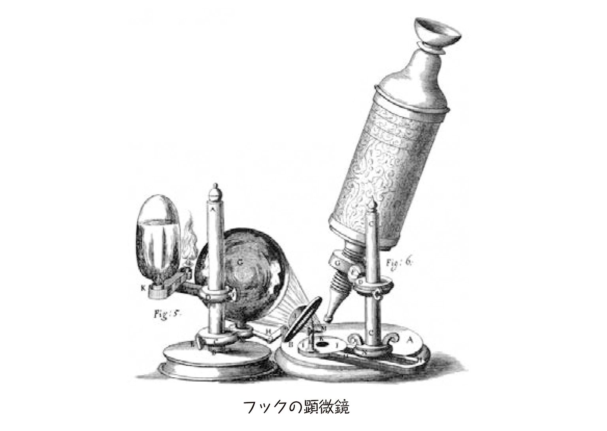

10
アイザック・ニュートン
（1642～1727） Isaac Newton
近代科学の始まり
「歴史上もっとも偉大な科学者の名前を挙げてください」と言われたら、多くの人は、アインシュタインかニュートンの名前を挙げるのではないでしょうか。
それほどに、この二人は科学の世界に大革命をもたらした人物です。ニュートンは、近代的な力学の完成者で、その後の科学技術の発達に大きな影響を与えました。
ニュートンの業績は、力学・数学・光学という三つの分野に代表されます。
力学とは、物体の運動に関する科学です。石ころが落ちるのもスペースシャトルが地球の周りを回るのも、すべて力学で説明できます。この力学の体系をつくり上げたのがニュートンです。その頃すでに、ガリレイやケプラーが物体の運動及び惑星の運行を研究して、運動には一定の規則性があることが分かっていました（→「06 ガリレオ・ガリレイ」）。
ニュートンは、それらをまとめて、ニュートン力学として集大成したのです。ニュートン力学は、『プリンキピア（自然哲学の数学的諸原理）』という書物にまとめられて、1687年に発行されました。
ニュートンは、庭のリンゴの木からリンゴが落ちるのを見て、万有引力の法則を思いついたというエピソードが伝えられています。そのときニュートンは、「リンゴを落下させる地球の引力は、月にまで届いているのだろうか？ だとしたらなぜ、落ちてこないのだろうか？」と考え、そこから万有引力の法則を発見しました。
地上でも宇宙でも、同じ万有引力の法則が当てはまるということは、当時の古いキリスト教の、神の居所である清らかな天と汚れた地上という世界観からの脱皮を図るもので、人々の意識をも大きく変えていきました。
万有引力の法則は、次のような式で表されます。
F＝G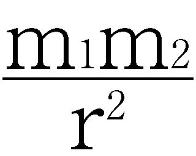
「万有引力の大きさ=万有引力定数×（（物体１の質量× 物体２の質量）÷物体１と物体２の間の距離の二乗）」
しかし、ニュートンは万有引力定数（G）を比例定数としただけで、この値は分かっていませんでした。この値を実験によって求めたのは、イギリスの科学者ヘンリー・キャベンディッシュ（1731～1810）です。有名なキャベンディッシュの実験（1797～1798）によって求めた地球の密度から計算することができました。現在、Gの値は、6.6720×10-11 N・m2・kg-2ということが分かっています。
万有引力の法則以外にも、力学の分野の業績としては、「ニュートンの運動の３法則」の発見があります。これは、中学や高校で必ず出てきますからご存じのことと思います。
第１法則は「慣性の法則」で、「運動している物体は運動をし続け、静止している物体は静止し続ける」という法則です。冬季オリンピックの競技のカーリングなどは、氷とストーンとの間の摩擦を少なくすることで、ストーンを慣性の法則で滑らす競技です。
第２法則は「運動の法則」で、「物体に生ずる加速度の大きさは加えた力の大きさに比例し物体の質量に反比例する」という法則です。車を加速するとき、アクセルを踏み込んで大きなパワーを出した方が速く加速することや、同じ出力を出しても、重いトラックが軽い乗用車よりも加速が悪いのは、第２法則で説明できます。
第３法則は「作用反作用の法則」で、「二つの物体が力を及ぼし合うとき、どちらの物体も同じ大きさの力を受け、作用する向きは反対である」という法則です。ロケットが噴射によって飛ぶのは、作用反作用の法則によるものです。
ニュートンの数学の分野の発明には微積分法があります。
ただ、同世代のドイツの数学者ライプニッツ（1646～1716）も微積分法を編み出していました。そこで微積分法を最初に発明したのは、ニュートンかライプニッツかということで熾烈な争いが演じられました。
ニュートンの三つ目の大きな業績に光学の研究があります。彼は、プリズムで太陽の光がいろいろな色に分解して見えること、レンズは色によって焦点の位置が違うことを発見しました。そこで色がにじむレンズを使わず、反射によって像を結ばせるニュートン式反射望遠鏡を発明しました。
反射望遠鏡そのものの原理は、ジェームス・グレゴリー（1638～1675）が1661年に発明したといわれています。

11
オーレ・レーマー
（1644～1710） Ole Christensen Romer
初めて光の速さを測った科学者
光の速度は約30万km毎秒。１秒間に地球を７回り半進む速度です。時速にすると10.8億km毎時。１時間で地球から太陽までの距離（約１億5000万km）の７倍くらい遠くまで飛んでいきます。
光速の測定が試みられるようになったのは17世紀になってからです。ガリレオ・ガリレイは、１マイル（約1609m）の距離を空けて、２人の人にランプを持って立ってもらいました。ランプには覆いがかかっていて、一方の人が覆いを取って光を発し、もう一方の人は、その光が見えたらすぐに自分のランプの覆いを取って光を発して相手に見せ、光が二人の間を往復した時間から光速を測ろうとしました。しかし光の速度はあまりにも速すぎて、そのような方法ではとても測ることができませんでした。
光が１マイルの距離を進むのに要する時間は、わずかに5.3μ秒（0.0000053秒）です。
初めて光の速度の測定に成功したのは、デンマークの天文学者オーレ・レーマーでした。レーマーは、望遠鏡で木星の衛星イオの「食」を観測していて、食の時間が地球と太陽と木星の位置関係によって違うことに気がつきました。食というのは衛星が木星（太陽の方を向いていない面）の後ろに回り、太陽の光が当たらなくなって見えなくなる現象のことです。イオはガリレオ衛星（ガリレオが発見した木星の４つの衛星）のうちの一つで、42時間28分で公転しています。公転周期が短いので食が頻繁に起こります。
レーマーは、イオの食の開始時間及び終了時間が、地球の公転軌道上の位置によって違うのは、地球公転軌道の直径分の距離を光が進むのに要する時間の差によるのではないかと考えました。
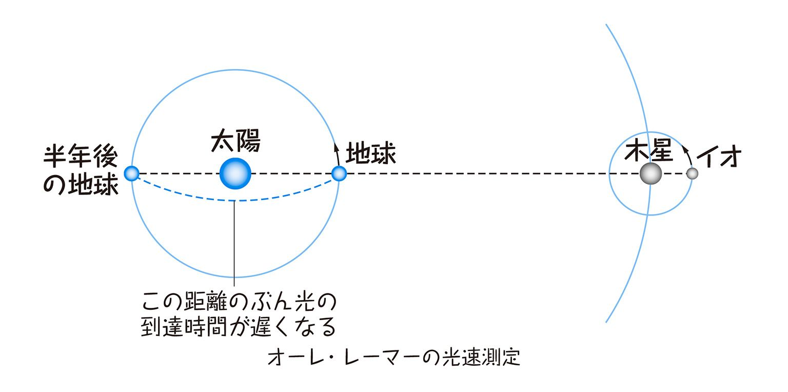
レーマーは、この時間の差から光の速度を計算し、1675年に光の速さは約22万km毎秒であるとしました。現在分かっている約30万km毎秒とはだいぶ違いますが、それでも光の速さには有限の速度があることが分かったことは大きな成果でした。
その後、1728年にはイギリスの天文学者ジェームズ・ブラッドリー（1693～1762）が、恒星に「光行差」があることを発見し、光行差から光速を求めました。その速さは、30万1000km毎秒で、正しい光の速度にぐんと近づきました。光行差とは、雨の日に電車に乗って窓の外を見ていると、雨粒が後ろの方に飛んでいるように見えるように、地球の公転速度と自転速度によって、光がやってくる方向が、実際に光源（星）がある方向とは違って見えることをいいます。
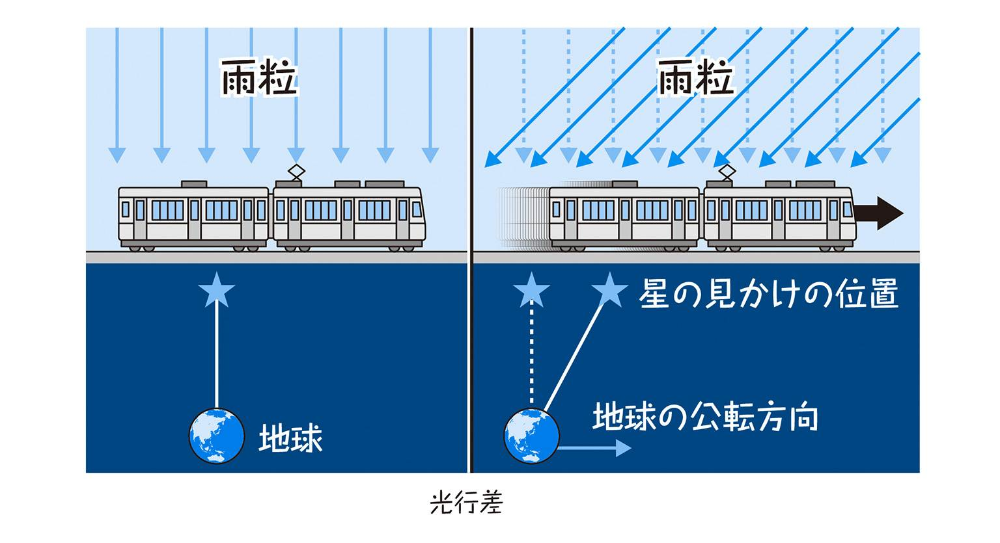
1849年には、フランスの物理学者フィゾー（1819～1896）が、回転する歯車と鏡を使って光の速度を測りました。
フィゾーは、回転する歯車の手前から光を発して、歯車の歯の間に光を通し、8.6km先の鏡に反射させ、戻ってきた光を再び歯車を通して見てみました。歯車の回転数を上げると、歯の間から出ていった光が戻ってくる時には、次の歯が回ってきていて光が、歯車を通らなくなってしまいます。そこで、歯が一枚ぶん動いて反射してきた光が、歯車を通らなくなったときの回転数を記録しました。歯が１枚回転する（移動する）間に、光が8.6km先の鏡に当って反射してきたわけですから、歯が１枚分回転する間に、光は17.2km進んだということになります。こうしてフィゾーが測った光速は31万3000km毎秒でした。
また1862年には、フランスの物理学者フーコー（1819～1868）が、歯車の代わりに回転する鏡を使って29万8000km毎秒という結果を出しました。こうして光速は、どんどん正確に測定できるようになり、現在、光の速度は、真空中で２億9979万2458m毎秒であることが分かっています。

12
ダニエル・ベルヌーイ
（1700～1782） Daniel Bernoulli
流体力学の始まり
ダニエル・ベルヌーイは、スイスの科学者です。父親は、数学者のヨハン・ベルヌーイ（1667～1748）。親族に数学者の多い家系で、ダニエル・ベルヌーイも数学に才能を発揮しました。
ベルヌーイといえば、よく知られているのが「ベルヌーイの定理」（1738年）です。これは、水や空気などの流れ（流体）が持つ運動エネルギーが保存されるという法則です。
この法則は、1738年に出版された『ハイドロダイナミカ（水力学）』という本にまとめられました。ベルヌーイの定理は、今も流体力学の基本原理となっています。
流体のメカニズムを流体力学という理論にまとめたのはベルヌーイですが、実は流体に関する工学的な関心は、四大文明の発生とともに生まれていました。四大文明はどれも、大きな川の流域に発生しています。大河があると水が豊富で、農業を行うのに適していたからです。畑には水を引く水路を造らなければなりません。地中に穴を掘って地下水路を造ったり、水を汲み上げたりする装置も必要です。そのため水を扱う水理学が発達しました。
古代ギリシャには、アルキメデスの揚水機があり（→「03 アルキメデス」）、工学的にはずいぶん古くから、水という流体には関心が持たれていました。
ベルヌーイの定理は、完全流体（非圧縮性で粘性のない定常流）を対象としていますが、粘性がある実際の流体にも近似的にベルヌーイの定理が当てはまります。そのため、後の流体が関わる工学に大きく貢献していきました。船・飛行機・自動車などはもちろん、下水道の配管の設計ですらベルヌーイの定理が活かされています。
ベルヌーイの定理は、飛行機の主翼が生み出す揚力を説明するときによく用いられます。
主翼は、上面のほうが下面よりも膨らんだ紡錘形をしています。また、もっとも厚い部分が翼の前後の中央ではなく、前縁に近い方にあります。
ベルヌーイの定理によると、運動エネルギーは保存され、流速の速いところでは圧力が小さくなり、遅いところでは圧力が大きくなりますから、単位時間あたり一定の量の流体（空気）が流れている翼の周辺では、流速の速い部分の圧力が小さくなります。
翼は上面が膨らんでいますから、前縁と後縁を結ぶ道のりが下面より長くなります。空気は粘性によって翼の表面に沿って流れます。前縁に当たった空気は上下二つの流れに分かれますが、二つの空気の流れは必ず同時に翼の後縁に到達し合流するため、道のりの長い翼上面に沿って流れる空気の速度の方が下面を流れる空気の速度よりも速くなります。
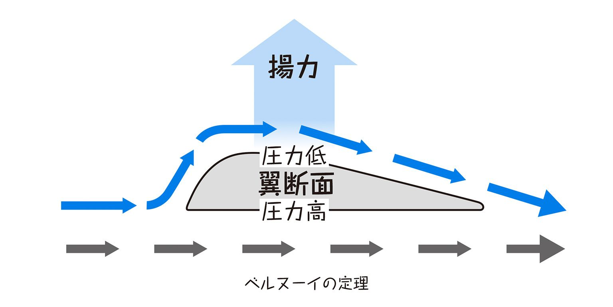
ベルヌーイの定理により、流速が速いと圧力が小さくなりますから、翼上面の方が下面よりも圧力が小さくなり、気圧差によって翼には上に向かう力が発生します。これが揚力です。実際に、空気の流れの中にある主翼の上面と下面にセンサーをつけて圧力を測ってみると、上面の方の圧力が低くなっていることが分かります。
流速が速いところで圧力が小さくなっていることは、身近なものを使った実験で理解することができます。
たとえば、２枚の紙を、１cmくらい離して指でぶら下げ、紙の間に、息を吹きかけてみると２枚の紙がくっつきます。これは紙の間を通る空気の速度が速くなったために、圧力が小さくなり、外側から押されたからです。
また、スプーンの背を蛇口から流れ出る水道の水に当ててみると、背の方向にスプーンが動きます。これは背の丸い方を流れる水のほうが反対側よりも流速が速くなるために圧力が小さくなり、背の方に引き寄せられるからです。

13
アレッサンドロ・ボルタ
（1745～1827）
Alessandro Giuseppe Antonio Anastasio Volta
電池の発明 電気の時代へ
人間が電気の存在を知ったのはかなり古く、いまから2600年ほど前の古代ギリシャ人は、すでに琥珀を皮布でこすると静電気が起こることを知っていました。電気を意味する英語の"electricity"は、ギリシャ語の"elektron（琥珀）"からきています。
1930年代に、イラクのバグダッド近郊で、高さ約10cm、直径約３cmの壺が出土しました。壺の中には銅製の容器が入っていて、そこに鉄製の棒が差し込んでありました。この壺は、紀元前250年頃に作られた電池ではないかと考えられており、「バグダッド電池」と呼ばれています。1974年に、アメリカのゼネラル・エレクトリック社の技術者グレーがこの壺を再現し、中に電解液として酢やワインを入れて電池として作動させてみたところ、0.4～0.8ボルトの電圧を起こすことができました。
静電気を初めて科学的に研究したのは、イギリスの医師で物理学者のウィリアム・ギルバート（1544～1603）で、16世紀になってからです。彼はエリザベス女王の侍医として仕事をするかたわら、磁石や電気の研究を行いました。彼は、ガラス・硫黄・宝石などを摩擦すると静電気を帯びて、紙や埃を吸い寄せることを発見しました。
そして、時代が進んで18世紀になると、静電気を貯めることができないかと考えられるようになりました。
1745年、オランダのライデンに住むオランダ人の科学者ミュッセンブルーク（1692～1761）は、内側と外側に金属箔を貼り真鍮の棒を入れたガラス瓶で、電気を貯めておけることを発見しました。この瓶を「ライデン瓶」といいます。
ライデン瓶は、いまでいうコンデンサと同じ仕組みです。ガラスという絶縁体を金属膜という導体で挟むことで、二つの金属膜の間に電位差が生まれて電気が貯まるのです。
このライデン瓶を使って、雷は電気的な作用でできることを発見したのが、アメリカの科学者ベンジャミン・フランクリン（1706～1790）です。彼は、1752年、雷が鳴っている日に凧揚げをし、凧糸の端にライデン瓶を接続して、雷の電気をライデン瓶の中に捉えることに成功しました。
1791年、イタリアの生理学者ガルバーニ（1737～1798）は、カエルを解剖しているとき、カエルの足の筋肉に２種類の金属を当てると、筋肉が収縮することを発見しました。ガルバーニは、生物がライデン瓶のように電気を貯めているのではないかと考えて、これを「動物電気」と名づけました。
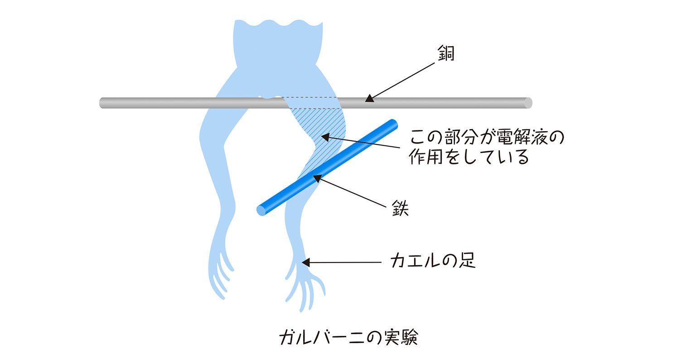
このニュースを聞いたボルタは、動物の組織が電気を持っているのではなく、２種類の異なった金属で組織を挟むことで電気が発生するのではないかと考えました。ガルバーニの実験では、銅でできたフックにカエルの足の筋肉をぶら下げて、鉄でできたピンセットで筋肉をつまんだときに、筋肉が収縮していたのです。
ボルタは、鉄と銅の間に挟まれた生体組織が電解液として作用して、電気が発生したのではないかと考えたのです。
そこでボルタは、カエルの筋肉の実験を真似て、銀の板と錫の板の間に食塩水を染み込ませた布を挟んで何層にも重ねたものを作ってみました。すると、銅板と錫板の間に電流が流れたのです。これは1800年のことでした。
この装置を発展させて、ボルタは、希硫酸または食塩水を含ませた布を銅板と亜鉛板で挟んで電極とした電池を作りました。これが世界で初めて作られた本格的な電池で、ボルタ電池と呼ばれています。
その後、いろいろな科学者がボルタ電池に改良を加え、1836年には、イギリスの化学者ジョン・フレデリック・ダニエル（1790～1845）が、1.1ボルトの電圧を安定して供給できるダニエル電池を発明しました。さらに1864年には、フランスのルクランシェ（1839～1882）が二酸化マンガンと亜鉛を使った電池を発明しました。これが、現在の乾電池の元になっています。
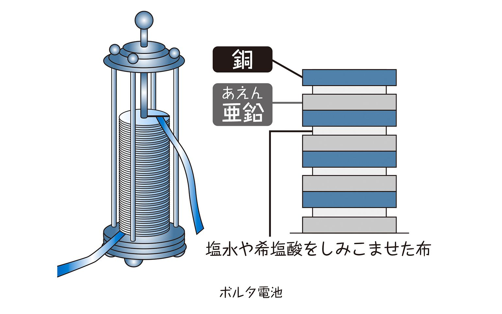
14
アントワーヌ・ラボアジェ
（1743～1794） Antoine-Laurent de Lavoisier
近代化学の始まり
火はどうして燃えるのでしょう？現在、私たちは、物質が空気中の酸素と化合して、熱や光を出すことが「燃える」ことであると知っています。しかし、18世紀にはまだ、燃えるとはどういうことなのかがよく分かっていませんでした。
ドイツ人の医師シュタール（1659～1734）は、「フロギストン（燃素）」という仮想の物質を考え、フロギストンが物質から放出されるのが燃焼であると考えました。18世紀には、このフロギストン説が支配的でした。
この古い考え方を打ち破ったのが、フランスの化学者アントワーヌ・ラボアジェです。フロギストン説によれば、物質が燃えるときにフロギストンが出ていくのですから、燃え残った物質は燃焼前よりも軽くなるはずです。ところが、金属を燃やして灰にすると、灰の方が重くなるのです。
1774年、ラボアジェはフロギストン説に疑問を持ち、燃えるというのは、物質が空気中の何かの物質と結合することではないかと考えて、次のような実験をしました。
ガラスの密閉容器の中に金属の錫を入れ、容器の中の空気を含めて質量を精密に測りました。それから容器を加熱して錫を燃焼させて灰にしました。そして、燃焼後の容器の質量を測ってみたところ、燃焼前と同じでした。続いて容器の蓋を抜くと、勢いよく空気が入りました。密閉容器の中では空気の量が減って、中の圧力が外の大気の圧力よりも小さくなっていたのです。このとき新たに入った空気の質量は、燃焼後の錫の質量増加分と同じでした。
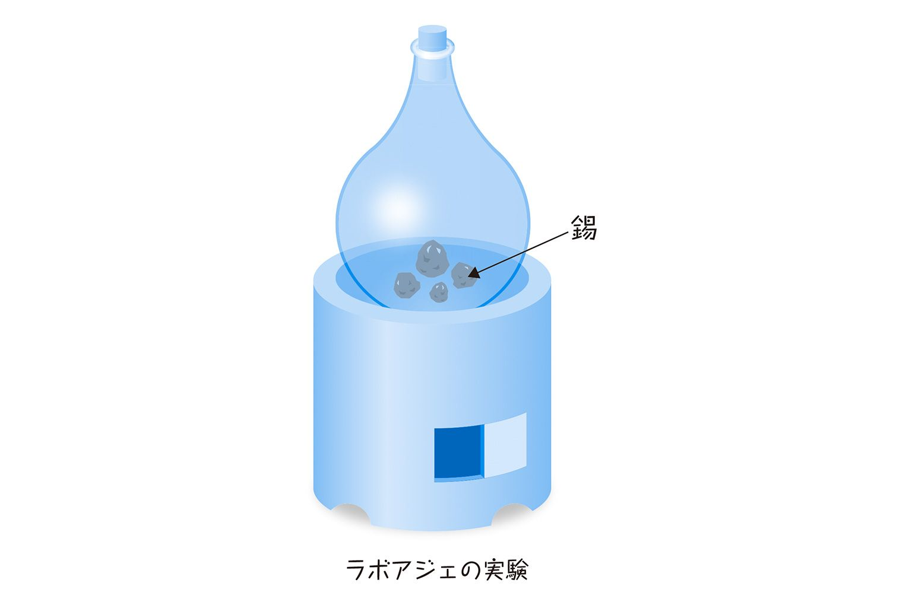
つまり、錫の灰が元の錫よりも重くなったのは、空気中の酸素と結合したからなのです。
ラボアジェはこういった精密で定量的な実験によって、フロギストン説を否定し、化学反応が起こっても反応前と反応後で質量は変わらないことを証明したのです。この実験から導かれたのが、「化学反応の前と後では質量の総和は等しい」という「質量保存の法則」です。
その後、相次いで化学に関する重要な法則が発見されていきました。1799年にはジョゼフ・ルイ・プルースト（1754～1826）が「定比例の法則」を発見。さらに1804年には、ジョン・ドルトン（1766～1844）が「倍数比例の法則」を発見しました。
定比例の法則とは、「化合物を構成する元素の質量比は常に一定である」という法則です。たとえば、銅と酸素が化合して酸化銅ができる反応を例にとると、反応させようとする銅と酸素の量がどれくらいあろうと、化学反応によってできた酸化銅の銅と酸素の質量比は、常に一定（3.97：1）になります。余った分は反応しないで残ります。
これは、化学物質に含まれている元素の質量の比率は常に一定であることを示しています。
倍数比例の法則は、「ある元素Aと別の元素Bが化合して異なる化合物をつくるととき、一定量のAに対するBの質量は常に整数比になる」という法則です。たとえば、一酸化炭素（CO）と二酸化炭素（CO2）を見ると、一酸化炭素は、Cが１つ（12g/mol）とOが１つ（16/mol）くっついていますが、二酸化炭素はCが１つとOが２つくっついています。一酸化炭素のOの質量は16g/mol、二酸化炭素のOの質量は２個分なので32g/mol。つまり、酸素の質量は、二酸化炭素では常に一酸化炭素の２倍になっているのです。
こうして、物質は原子からできていると考えると化学反応をうまく説明できるということが、しだいに分かっていきました。
近代的な化学は、まさにラボアジェから始まったのです。
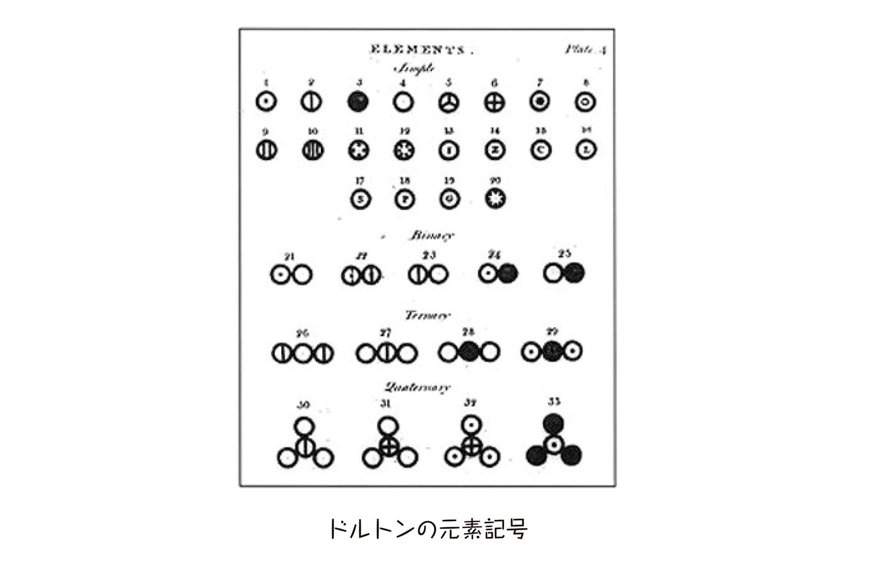

15
チャールズ・ダーウィン
（1809～1882） Charles Robert Darwin
神の創造説から進化論へ
生物はどのようにして発生し、どのように進化していったのか。これは科学の大きなテーマの一つです。古代ギリシャの科学者たちも、同じことを考えました。しかし、彼らが考えたことは、思惟が優先する哲学的なものでした。アリストテレスは、生物を下等生物から順番に高等生物までいくつかの階層に分け、もっとも上に人間を置きました。現在のような進化論の概念はありませんでしたが、生物は下等生物からしだいに高等生物に移り変わり、最後に人間になったと考えていました。
その後、中世にかけてキリスト教が支配的となり、進化論的な考え方は長らく登場しませんでした。
18世紀の半ばになると、化学や物理の分野で新しい発見が次々と行われ、論理的・合理的な考え方が広まっていきました。また、1789年にはフランス革命が起こり、王制が崩壊して市民社会へ転換していく時代でもあり、ヨーロッパには新しい気分がみなぎっていました。そういう時代背景が、神の創造説から進化論へと、後押ししていきました。
ダーウィンは、1809年にイギリスに生まれ、子どもの頃から博物学に強い興味を持っていました。
1831年、22歳のダーウィンは、イギリス海軍の測量船ビーグル号に博物学者として乗船する機会を得ました。そして、1836年までの５年間、ダーウィンは全長27.5m、排水量235トンの小さな船で南半球の国々を訪れ、それまで見たこともない生物や地質を観察しました。
中でも、東太平洋のエクアドル沖約900kmにあるガラパゴス諸島の生き物を見たときは驚きました。そこにいた生物は独自の進化を遂げていたのです。このとき、ダーウィンは、生物は自然淘汰によって進化していくのだという確信を持ちました。
ダーウィンは、この航海で体験したことを『ビーグル号航海記』（1839年）という本にまとめました。現在でも読み継がれている名作です。
ダーウィンは、航海の後、進化論の研究を進め、1859年に『種の起原』という本を著しました。生物は同じ仲間でも若干の個体差があり、自然の中で周囲の環境にうまく適応できたものが残り、そうでないものは残らない。そのようにして、生物はしだいに高等なものに進化していったというのが進化論の考え方です。
これは、キリスト教における神の創造説を否定するものなので、当時は宗教論争を引き起こしました。しかし現在、ダーウィンの進化論は、広く認められるところとなっています。
ダーウィンの時代の前後には、生物学上の発見がいくつもありました。
ダーウィンより100年ほど前に生まれたスウェーデンの博物学者カール・フォン・リンネ（1707～1778）は、属名と種名で生物を体系的に分類する「二名法」という方法を編み出しました。
また、オーストリアの植物学者メンデル（1822-1884）が、遺伝に規則性があることを発見したのは、1865年のことです。これは「メンデルの法則」として知られています。
ダーウィンの専門分野の一つであった地質学も、この時代に大きく進歩しています。その結果、古代の生物を化石として調べる技術が進み、生物の進化がより具体的に分かるようになってきていたのです。
ダーウィンの進化論は、生物学だけでなく、社会学や経済学にも大きな影響を与え、その考え方はダーウィン主義（ダーウィニズム）と呼ばれています。
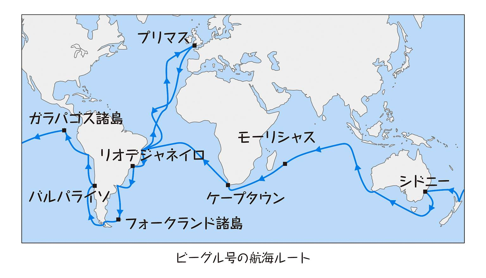

16
ジェームズ・プレスコット・ジュール
（1818～1889） James Prescott Joule
熱力学の始まり
ジェームズ・プレスコット・ジュールは、1818年、イギリス・マンチェスターの裕福な醸造業者の家に生まれました。当時のイギリスは産業革命（1760年代～1830年代）のまっただなかでした。
1765年には、ジェームズ・ワット（1736～1819）が、当時主流だったトーマス・ニューコメン（1664～1729）が開発した蒸気機関を改良して、効率の高い蒸気機関をつくることに成功しました。さらにワットの蒸気機関の特徴は、力を回転軸の運動として取り出せることでした。そのためとても応用範囲が広く、紡績業をはじめとする当時の工業がぐんと進歩していきました。
また、イギリスのストックトンとダーリントンの間に世界最初の鉄道が開通したのは1825年のことです。
そんな時代に、ジュールは生まれました。ファラデー（1791～1867）が発見した電磁誘導の法則（→参照）を知って、ジュールも最初は、電磁誘導を利用して回転する力を取り出す電気モーターの研究を行いました。
しかし、電気モーターでは十分な出力が得られないと判断して、モーターの開発は中断し、熱と仕事量の研究に没頭していきました。
電気モーターは、1821年にファラデーが原理的なモーターを発明し、その後1832年にはイギリスのウィリアム・スタージャン（1783～1850）が、そして1836年にはアメリカのダヴェンポート（1802～1851）が実用的な電気モーターを開発しています。
ジュールは、電気モーターの研究の過程で、導線に電流を流すと発熱することに興味を持ちました。電気エネルギーが熱エネルギーに変わると、どれくらいの熱を出すのだろうか？ ジュールは、実験によってこれを確かめようとしました。
その結果、ジュールは、「導線に電流を流すと、発生する熱量は導線の電気抵抗と電流の二乗に比例する」というジュールの法則を発見しました（1840年）。電気ストーブで使われているニクロム線を思い浮かべるといいでしょう。大きな電流を流すほど暖かくなるのは、ジュールの法則によるものです。
ジュールは、水の中にコイルを入れた独自の実験装置を作り、コイルに電流を流して、電流の大きさと温度上昇の関係を精密に実験することによってジュールの法則を発見しました。
この実験では最初はボルタ電池（→参照）を使っていましたが、途中から発電機を使うようになりました。発電機は、回転運動から電磁誘導によって電気を取り出すものです。ジュールは考えました。発電機を回す物理的な運動（これを物理学では「仕事」といいます）と温度上昇の関係はどうなっているのだろう？
そこでジュールは、1845年～50年にかけて、「ジュールの実験」として知られている有名な実験を行いました。
ジュールは、回転する羽根車を入れた金属性の容器を作り、外に取りつけたおもりを落下させて羽根車を高速で回転させるようにしました。おもりが落下すると、その力で羽根車が回転します。容器の中に水を入れておくと、羽根車の回転によって水がかき回されて、わずかに温度が上昇します。
ジュールは、おもりが落下した距離と水の温度上昇の関係から、おもりが行った仕事と発生した熱の関係を調べました。そして仕事と熱が同じものであることを発見したのです。
ジュールから近代的な熱力学が発達していきました。
ジュールの名前は、現在のSI単位（国際単位系）の中に、エネルギー・仕事・熱量・電力量を表す単位「ジュール（J）」として残っています。１ジュールは、１ニュートン（N）の力が、その力の方向に物体を１ｍ動かすときの仕事量です。
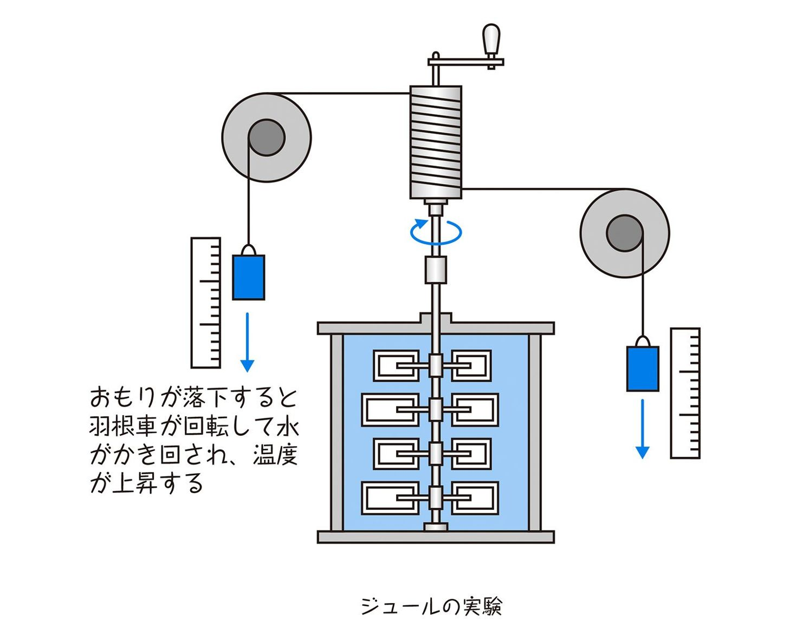
第４章
科学からテクノロジーへ
16世紀から19世紀は、中世の迷妄から訣別し、近代科学の基礎をかたちづくった時代でした。そして、いよいよ19世紀末から20世紀にかけて本格的な科学の時代が幕を開けます。
この時代の特徴は、新しい発見や発明が、高度なテクノロジーと結びついていったことです。テクノロジーは私たちの生活に役立つ機械や道具や仕組みをたくさん提供し、産業や経済が急速に発達していきました。
また、もう一つの特徴は、エネルギー源として電気が使えるようになったことです。電気は、電灯を灯し、モーターを回し、無線通信や放送を実現しました。また、原子の構造が分かり始め、電気をより効率よく便利に利用するための電子工学も発達していきました。
１世紀に満たない間に、これだけ技術と経済が発達した時代は他にはありません。
これは世界の人口増加を見れみればわかります。1900年には16億人くらいだった世界の人口が、2010年には70億人に達しようとしています。100年で人口が４倍以上にもなったのは、人類史上、20世紀が初めてです。
この章では、科学が高度なテクノロジーへと進化していった時代の科学者をみていきたいと思います。

17
ジェームズ・クラーク・マクスウェル
（1831～1879） James Clerk Maxwell
電磁波の発見
1800年にボルタが発明したボルタ電池は、持続的に直流電流を取り出せたので、その後、電気と磁気に関する物理学はたいへん発達していきました（→参照）。
デンマークの物理学者エルステッド（1777～1851）は、当時発明されたばかりのボルタ電池に興味を持ち、電気の研究にのめりこんでいきました。1820年、エルステッドは電流が流れている針金の近くで、方位磁石の磁針が振れることを発見しました。つまり、電気の流れと磁気の変化に何らかの関係があることを発見したのです。
これを聞いた、フランスのアンペール（1775～1836）は、追試を行い、平行に置いた二本の導線に電流を流すと、その間に目には見えない磁場が働くことを発見しました。また、磁場は電流が流れている方向に向かって右回りに働いていました。アンペールは、電流と磁場の関係を調べ、その二つの関係を表す「アンペールの法則」を発見しました。また、このときの磁場の向きは、電流の進行方向に対して右回りなので、「アンペールの右ねじの法則」といいます。いまも使われている電流の単位「アンペア（A）」は、アンペールにちなんだものです。
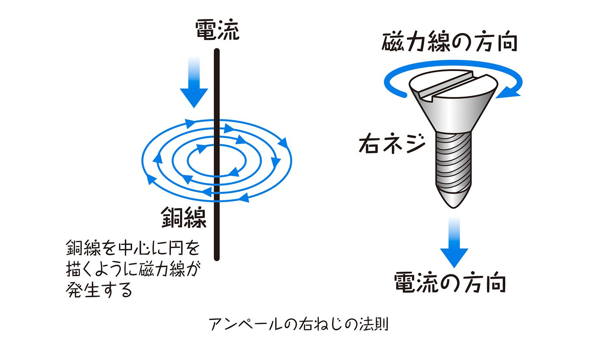
1831年、イギリスのマイケル・ファラデー（1791～1867）は、電気と磁場の関係について研究を続けていくうちに、電磁誘導を発見しました。電磁誘導とは、磁場が変化すると近くにある導線に電位差が生じて電流が流れる現象のことです。中学生の頃に実験したと思いますが、コイルの中に棒磁石を入れたり出したりすると、コイルに電流が流れます。これが電磁誘導です。発電機やモーターは電磁誘導を利用したものです。
ファラデーより40歳年下のマクスウェルは、ファラデーの成果を受けて研究を続け、1862年、電場と磁場からなる電磁波の存在を予言しました。さらにそれが光の速度で進むことが分かったため、光も電磁波であると考えました。さらに1864年には、電磁気学の基本方程式であるマクスウェル方程式を編み出しました。
マクスウェルが電磁波の存在を理論的に予言してから26年後の1888年になって、ドイツの物理学者ハインリッヒ・ヘルツ（1857～1894）は、実際に電磁波が存在することを確かめました。
電磁波は、すぐに無線通信に使われるようになりました。
1888年には、ヘルツ自らが火花式無線通信機を発明しています。火花式無線通信機とは、接近して配置した二つの電極の間に高電圧をかけて放電させ、この放電によって発生した電磁波を使って通信する通信機です。雷と同じ周波数の定まらない電磁ノイズに過ぎませんが、ある程度離れたところと無線通信を行うことができました。しかし、複数の無線機が通信を始めると、混信を起こして通信内容が分からなくなってしまいました。
それでも、無線通信は実用性が高く、世界各国の科学者・技術者が先を争って研究を進めていきました。
イタリアの無線技師グリエルモ・マルコーニ（1874～1937）は、火花式通信機に空中線（アンテナ）とアースをとりつけると、電波が遠くまで届くことを発見し、1901年、大西洋を超えてイギリスとカナダ・ニューファンドランド間の遠距離無線通信に成功しました。有名な悲劇の豪華客船タイタニック号も、マルコーニが開発した無線通信機を搭載していました。
こうして、あっという間に無線技術が進み、通信だけではなく放送も行われるようになっていきました。世界初のラジオ放送は、1906年にアメリカ・マサチューセッツ州のフェッセンデン（1866～1932）のラジオ局で始まりました。

18
ドミトリ・イヴァノヴィチ・メンデレーエフ
（1834～1907）Dmitrij Ivanovich Mendelejev
周期表の発見
物質を構成している根源は何か？ 古代ギリシャのアリストテレスらは四元素説を唱え、デモクリトスは、初めて原子という概念を考え出しました（→「02 デモクリトス」）。
また物質の根源が何であるかが分かれば、それらを組み合わせてどんな物質でも自由につくれるのではないか。そういった実利的な欲求から中世には錬金術が流行りました。卑金属を貴金属に変えようという試みは、かなり怪しげなところもありましたが、見方を変えれば、錬金術は化学実験でもあったのです。
1789年には、フランスの化学者ラボアジェ（→「14 アントワーヌ・ラボアジェ」）が、化学的な分析によってたどり着くことができるものを元素と呼び、水素・酸素など33種類の元素を挙げています。その後、新しい実験技術が確立するとともに、新たな元素が見つかり、1800年代半ばには、60種類を超える元素が知られていました。
1864年、イギリスの化学者ジョン・ニューランズ（1838～1898）は元素を原子量順に並べると、８個目ごとに同じ性質の元素が現れることを発見しました。音楽の音階のようなので、「オクターブの法則」と呼ばれています。しかしこの発見は、当時の化学者たちからは注目されませんでした。
また1868年にはドイツの化学者ロタール・マイヤー（1830～1895）も、元素が一定の周期で同じ化学的特徴を表すことを発見していました。
このような時代の中で、メンデレーエフの周期表が生まれました。
メンデレーエフは1869年、当時知られていた64種類の元素をカードに書き出し、何度も並べ替えて、何か規則性があるのではないかと考えました。そして、原子量（炭素12の質量を基準として表した原子の質量）の順番に並べると、一定の周期（周期律）で、化学的性質の同じ元素が出てくることに気づきました。
メンデレーエフが作った周期表は、縦列が８個のもので、最初の縦列は、上から順番（原子量の小さい順番）に、水素（H）、リチウム（Li）、ナトリウム（Na）、カリウム（K）......と続きます。この列は、水素を除いてアルカリ金属と呼ばれ、他の物質と化学反応を起こす力の強い物質です。
周期表を作ってみると、空いている場所がありました。当時は、64種類しか元素が知られていませんでしたが、メンデレーエフは空いている場所に入る新しい元素があるに違いないと考えました。そこで、この空白の場所にふさわしい元素として、アルミニウムと同じ性質を持つ新元素、ケイ素と同じ性質を持つ新元素など、いくつかの新元素の存在を予言しました。
当時、多くの化学者は、ニューランズやマイヤーのときと同様、そんなことはありえないと言いました。
しかし、４年後の1875年に、予想通りアルミニウムの一段下の周期に位置するガリウム（Ga）が、さらに1886年にはケイ素の一段下の周期にあるゲルマニウム（Ge）が発見されたため、メンデレーエフの周期表はいっきに学会に認められるところとなりました。
その後、続々と新しい元素が発見され、現在は、113個ほどの元素が発見されています。このうち、自然界に存在するのは原子番号92のウランまでで、原子番号93のネプツニウム（Np）と原子番号94のプルトニウム（Pu）がごくわずか自然界に存在しますが、原子番号95のアメリシウム（Am）以降の元素は、原子炉や加速器の中で人工的に作られた元素です。
メンデレーエフの周期表はのちに改良され、現在、教科書をはじめ広く使われている周期表は、横に18列を並べた長周期型周期表です。
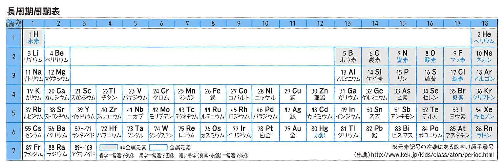

19
ウイルヘルム・レントゲン
（1845～1923） Wilhelm Conrad Rontgen
X線の発見
1831年にファラデーが電磁誘導現象を発見し（→参照）、この作用を応用したモーターや発電機が作られるようになりました。そのため、電気を利用した実験が盛んに行われるようになり、電気工学・電子工学が発達していきました。また、19世紀半ばには、高性能の真空ポンプを作ることができるようになりました。
1858年、ドイツのプリュッカー（1801～1868）は、内部を高度の真空にしたガラス管の中で真空放電の実験を繰り返していましたが、その過程で陰極（マイナス極）から飛び出す陰極線を発見しました。
当時は、陰極線は粒子であるという説と波であるという説があり、レントゲンも、それを確かめるために真空放電の実験を行っていました。そして1895年、放電管を黒い紙で覆って、室内を暗くして真空放電を行なってみました。すると、２ｍほど離れたところに置いてあった、蛍光物質（白金シアン化バリウム）を塗ってあったスクリーンが光ったのです。
白金シアン化バリウムは、青い光や紫外線が当たると光るのですが、放電管を黒い紙で覆ってあるので、光と紫外線は出ていないはずです。また、その蛍光物質は陰極線が当たった場合でも黄色い光を発するのですが、陰極線は空気中だと数cmしか進めないことが分かっていましたから、陰極線が原因ではありません。
また、放電管と蛍光スクリーンの距離を離すと蛍光は暗くなります。ちょうど、距離の二乗に反比例するように暗くなるのです。そして、放電管の電源を切ると、蛍光は消えました。明るさ（強さ）が距離の二乗に反比例するのは電磁波の特徴的な性質です。また、磁気をかけると陰極線は進路が曲がるのに、その未知の何かは曲がりませんでした。これも、未知の何かが電子のような電気を帯びた粒ではないことを示しています。
レントゲンは、放電管からまだ知られていない電磁波が出ているのではないかと考えました。陰極線が陽極に当たる部分からそれは出ているようでした。しかし正体がよく分からないので「X線」と名づけました。Xは、数学で使われる未知数を表す記号です。
彼は、放電管と蛍光スクリーンの間に、本、木片、アルミの板などを置いてみましたが、X線は何事もなく透過しました。
次に放電管と蛍光スクリーンの間に手を置いてみたところ、驚くことに、蛍光スクリーンには手の中の骨の輪郭が黒く映りました。つまり、X線は筋肉の部分は通過し、骨の部分は通過していないのです。
レントゲンは、スクリーンに写ったものを写真に撮り、この成果を論文としてまとめて1895年12月28日に物理学会に提出しました。
そして、X線の発見が翌年１月５日に新聞で報道されると、世界中が大騒ぎになりました。骨が透けて見えるというのは初めてのことだったからです。外科医たちはさっそく、X線写真を診察に利用しようと考えました。
また、1895年12月22日、レントゲンは、たまたま研究室を訪れた妻の右手のX線写真を撮影しました。この写真には、薬指に指輪をはめた右手の骨格が見事に写っています。
X線が電磁波であることを実験によって証明したのが、ドイツの物理学者マックス・フォン・ラウエ（1879-1960）です。ラウエは1812年、結晶の微細な構造の間隔が0.1ナノメートルとX線の波長と同じくらいであることに着目して、結晶にX線を当てると、光と同じように回折して規則正しい模様が見られるのではないかと考えて、実験したみたところ、見事な回折像を捉えることに成功しました。この実験によってX線は電磁波であることが確定したのです。
X線は、レントゲン写真のみならず、物質の構造解析などにも使われるようになり、その後の物理学発達に大きく貢献しました。
レントゲンは1901年、X線の発見によって第１回ノーベル物理学賞を受賞しています。
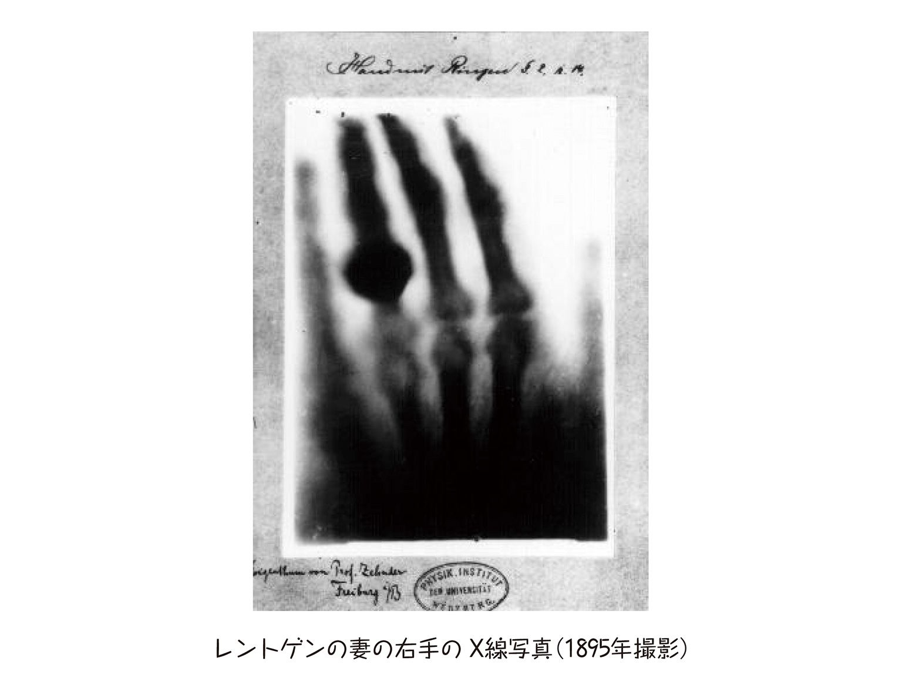

20
ジョゼフ・ジョン・トムソン
（1856～1940） Joseph John Thomson
電子の発見
中が真空の放電管から出てくるX線は、レントゲンやラウエの研究で電磁波であることが分かりました。では、X線が飛び出すきっかけを作っている陰極線とはどういうものなのでしょうか。
1858年に、プリュッカー（1801～1868）が陰極線を発見して以来、陰極線は粒子か波かの論争が行われていました。イギリスの物理学者トムソンは、陰極線は粒子の流れではないかと考えていました。
1897年、トムソンは陰極線に電磁場をかけてみました。すると陰極線の経路は曲がりました。これは陰極線が電気を帯びた粒子であることを示しています。
実験の結果、トムソンは陰極線の正体はマイナスの電気を持った質量の小さな粒子であることをつきとめました。この粒子は「電子」でした。質量は、水素原子の約1800分の１という小ささです。
トムソンは、電子発見に至る一連の研究で、1906年のノーベル物理学賞を受賞しました。
この頃から、原子の構造が世界中で研究され、いくつかの原子模型が提案されました。原子模型というのは、原子の構造を模式化して示したものです。
1904年にトムソンが提案したモデルは、正の電気を帯びた一様の空間にマイナスの電気を帯びた電子が埋め込まれていて振動しているというものでした。電子を干しぶどうだとすると、原子はあたかもぶどうパンのような形をしているというモデルです。
このように、20世紀の初めには、まだ原子がどういう構造になっているのかがよく分かっていなかったのですが、その後、わずか40年あまりで原子爆弾までつくるようになりました。このことから見ても、20世紀前半の原子物理学の発達のすさまじさが分かると思います。
20世紀初頭には、トムソンモデルのほか、いくつかの原子模型が提案されました。有名なのが長岡半太郎、アーネスト・ラザフォード、ニールス・ボーアが考えた原子モデルです。
1904年に、日本の物理学者・長岡半太郎（1865～1950）は、中央に正の電気を帯びた原子核があり、そのまわりを負の電気を持つ電子が回っているという「土星型原子モデル」を唱えました。現在、多くの人がイメージするもっともポピュラーな原子の姿です。
長岡の７年後の1911年に、アーネスト・ラザフォード（1871～1937）が発表した原子模型も、長岡が唱えた土星型原子モデルと同じようなものでした。ラザフォードは、トムソンの下で研究したイギリスの物理学者で、α線やβ線、そして原子核を発見した、まさに原子物理の父と呼ぶべき科学者です。
一方、デンマークの物理学者ニールス・ボーア（1885～1962）が1913年に唱えた原子モデルは、電子は特定の軌道上にあるとする、量子力学の考えに基づくものでした。
現在の原子モデルは、原子核の周りに電子が電子雲という雲状になって存在しているというものです。電子の位置と運動量はハイゼンベルグの不確定性原理によって、位置と運動量を同時に決定することはできないことが分かっています。電子がいる場所は確率でしか表せないので、雲状に表現するしかないというわけです。
ラザフォードは1908年にノーベル化学賞、ボーアは1922年にノーベル物理学賞を受賞しています。長岡半太郎は、ノーベル賞はもらえませんでしたが、1937年に第１回文化勲章を受章しています。
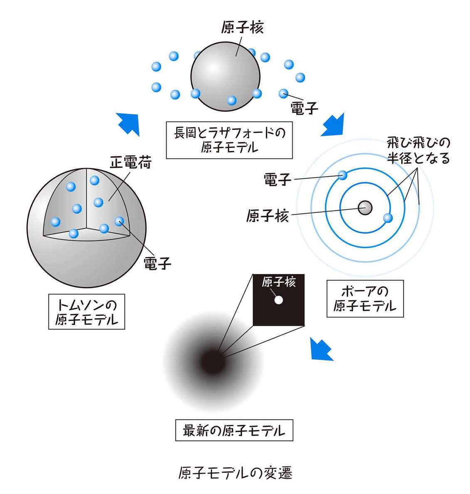

21
マックス・プランク
（1858～1947） Max Planck
量子論の始まり
それは、溶鉱炉の燃える鉄の色から始まりました。
19世紀後半、ドイツでは鉄鋼業が急速に発達していました。軍艦・商船などの船舶、鉄道、ビル、橋梁などを造るために、鉄の需要が急増していたからです。
目的に合った高品質の鉄を作るためには、溶鉱炉の精密な温度管理が必要でした。製鉄所の技術者は、溶けた鉄の色で大体の温度を推定していました。しかし、もっと正確に温度を知ることができれば、より高品質の鉄をつくることができます。
そういった工業上の目的を持って、ドイツの物理学者マックス・プランクは、物体の温度と放射される光の関係について研究していました。
その少し前の1896年、ドイツの物理学者ウィルヘルム・ウィーン（1864-1928）は、物体の温度が高くなると放射される光の波長は短くなる、つまり温度が高いほど青白い光を出すという法則（ウィーンの法則）を発見していました。しかしこの法則は、実験で求めた結果とズレがあることが知られていました。波長の長い赤いほうの光では、法則によって予測された数値と実験で求めた数値が一致していなかったのです。
そこでプランクは1900年、このズレが出ないように工夫した方程式（プランクの式）を編み出しました。しかし、この方程式には、ちょっと変わったところがあって、放射されるエネルギーは、連続的に変化するのではなく、とびとびの値として示されていたのです。数式に入っていたのは、"hν"という記号でした。"h"はプランク定数、"ν（ニュー）"は光の振動数です。
プランクの式から分かるのは、光子などの非常に小さな物質のエネルギーは、"nhν（nは整数）"、つまり連続した量として存在するのではなく、整数倍の量として、とびとびの値をとって存在しているということです。
２倍、３倍、４倍......と増えていき、0.5倍とか1.25倍というのはないのです。このとびとびの値をとるものを「量子」といいます。
エネルギーが連続した量ではなく、とびとびの値しかとれないということは、従来の古典物理学では考えられないことでしたから、当時の物理学の世界に大きな衝撃を与えました。
プランクが方程式を編み出したときのエピソードとして、次のような話があります。プランクは、考えに考え抜いてもなかなかいいアイデアが浮かびませんでした。ところが、数式をいじっていた助手が、ウィーンの式の分母から１を引くと、実験結果にぴったりの式になることに気がつきました。なぜ、「-1」を加えたらうまくいくのかは、プランクにも助手にも説明できなかったといいます。しかし、学会発表が迫っているので、このまま発表してしまえということになったのだそうです。
実際プランクは、当時、自ら編み出した式が、それほど重要なものだとは認識していなかったようですが、まさにプランクこそが量子力学への扉を開いたのです。
プランクは、この業績で1918年にノーベル物理学賞を受賞しました。現在、プランク定数は、光速や万有引力定数などと並んで重要な物理定数となっていて、その値は、「6.62606896 × 10（-34） J .s」です。
プランク定数の発見から５年後の1905年には、アインシュタイン（→「23 アルバート・アインシュタイン」）が「光の量子仮説」を発表して、光が粒であることを証明。1926年には、オーストリアの物理学者エルビン・シュレーディンガー（1887～1961）が波動力学を確立し、ミクロの物質は波と粒子の二つの性質を併せ持つことを示し、さらに1927年には、ドイツの物理学者ウェルナー・ハイゼンベルク（1901～1976）が、不確定性原理を発表し、ミクロの物質は、位置と運動量を同時に確定することはできないことを発見しました。
こうして20世紀の物理学は、ニュートンの古典力学から量子力学へと進化していきました。この最初のきっかけを作ったのがマックス・プランクだったのです。

22
ライト兄弟
（兄ウィルバー 1867～1912、弟オービル 1871～1948）
Wilbur Wright／Orville Wright
動力飛行機の発明
産業革命以降の最大の発明の一つは、飛行機ではないでしょうか。空を飛ぶことは大昔から人類の夢でした。しかし、実際に空を飛べるようになるまでは、長い年月が必要でした。史上初めて人を乗せて空を飛んだ乗り物は飛行機ではなく、気球でした。1783年、フランスのパリで、モンゴルフィエ兄弟の気球が約25分間の有人飛行に成功しました。
しかし、気球は風船のように浮かんでいるだけで、あまり自由に動くことができません。やはり鳥のように自由自在に空を飛びたい、というのが人間の自然な欲求でした。
19世紀末、ドイツのオットー・リリエンタール（1848～1896）は、飛行の原理について研究していました。彼は、1888年頃、空気力の計測装置を作り、どのような形の翼が大きな揚力を生み出すことができるのかを研究しました。このときの実験のデータは、『飛行技術の基礎としての鳥の飛行』（1889年）としてまとめられました。
リリエンタールは、空気力の実験を繰り返した後、1891年から1896年にかけて何機ものグライダーを作り、自ら操縦して小高い丘から飛び降り、滑空飛行を繰り返しました。
残念ながら、リリエンタールは1896年の滑空試験の最中に墜落して死んでしまいましたが、彼が残した空気力（揚力）のデータは、アメリカのライト兄弟がフライヤー号を設計する際に活かされました。
当時は、世界中の飛行機研究家が、動力飛行一番乗りを目指してしのぎを削っていました。
1885年、ドイツの技術者ゴットリープ・ダイムラー（1834～1900）がガソリンエンジンを開発しました。1886年には、早くもこのエンジンを搭載した自動車が実用化され、ダイムラーは1990年にダイムラー社を設立しています。
自動車に搭載可能なほど小さくて軽いエンジンを飛行機の動力として搭載すれば、自力で飛べる飛行機ができる。
ライト兄弟は、そのように考えて、経営している自転車店の技師に頼んで、飛行機用のエンジンを作ってもらいました。そのエンジンは、重量68kg、16馬力の４気筒のガソリンエンジンでした。
ライト兄弟が史上初の動力飛行に成功したのは、1903年12月17日、ノースカロライナ州キティーホークの砂浜でした。海から吹いてくる風速10m毎秒の強い風に向かって、弟のオービル・ライトが操縦するフライヤー号はエンジンの音を轟かせて、砂浜に敷いたレールの上を滑走しました。
フライヤー号は、わずかに滑走しただけで空に浮かびました。このときの飛行距離は36m、飛行時間はわずか12秒でした。紙飛行機でも飛べるほどの短いフライトでしたが、これが人類史上最初の動力機による有人飛行だったのです。
ライト兄弟のフライヤー号がとりわけ優れていたのは、飛行機を自由自在に操縦したいという意志が明確に表れていたことです。
フライヤー号には、自在に操縦するために、他の飛行機には見られないような工夫がしてありました。当時は、針路を変える、つまり旋回するときは、方向舵を動かせばいいと考えられていました。
これでも、旋回できるのですが、滑らかにはいきません。遠心力が勝って、飛行機は横滑りしてしまうからです。
そこでライト兄弟は、旋回するとき、方向舵の動きに合わせて主翼の端をねじるという方法で滑らかな旋回飛行を実現しました。上下に２枚ついた主翼を段ボール箱だとすると、側面を手に持ってねじるような感じです。こうすることで、現在の飛行機の主翼についている補助翼（エルロン）と同じ効果を得ることができたのです。
補助翼・方向舵・昇降舵でコントロールするという現在の飛行機と同じ操縦方法は、フライヤー号が最初に実現したのです。
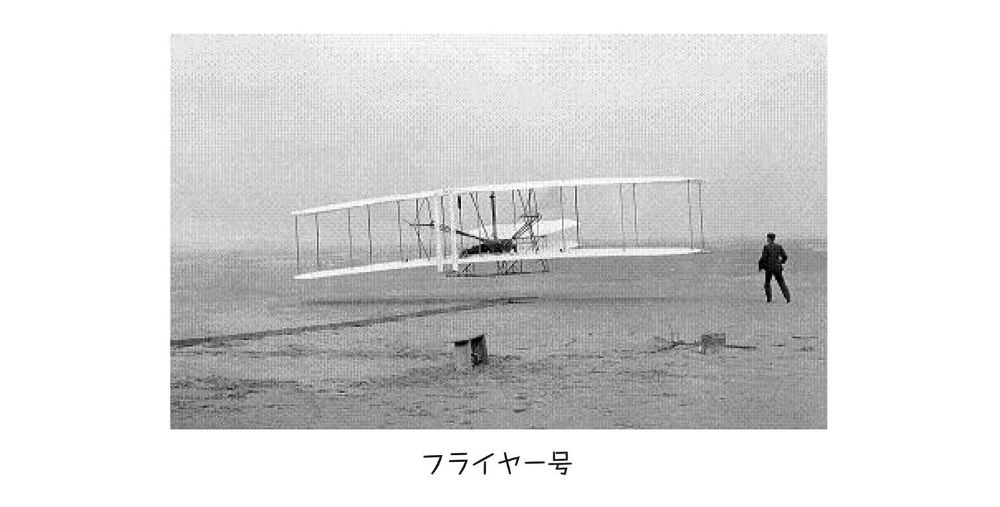

23
アルバート・アインシュタイン
（1879～1955） Albert Einstein
相対性理論で物理学に大革命
アインシュタインといえば、誰もが知っている20世紀を代表する物理学者です。何がすごいかというと、それまでの物理学の世界観をガラっと変えてしまったことです。
アインシュタインは、1905年に特殊相対性理論、1915年に一般相対性理論を発表し、ニュートン力学の常識をぶち壊しました。ニュートン力学では絶対的なものとされていた時間と空間を相対的なものとし、光の速度を絶対的なものとしたのです。
時間や空間は絶対的なものではないので、観測者の運動状態によって時間と空間が伸びたり縮んだりするというのです。これは、常識では考えられないことですが、宇宙のスケールでは、まさにこの通りなのです。
アインシュタインは、特殊相対性理論で、光速度不変の原理を提示し、運動する物体は光速に近づくほど、物体の長さが短くなり、時間の経過が遅れることを示しました。どれくらい変わるかというと、長さは"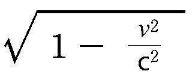倍"になり、時間は"倍"遅れます。"v"は飛行している物体の速度、"c"は光速です。
たとえば、光速の２分の１の速度で飛んでいる宇宙船は、長さが87％ほどに短縮し、時間は13％ほどゆっくり進みます。
不思議な話ですが、これは数学的な虚構ではなく、本当にそうなるのです。たとえば、カーナビでおなじみのGPS衛星は、時速約１万4000km（光速の0.0013％）で地球の周りを飛んでいますが、これくらいの速度でも相対論の効果によって搭載されている原子時計がわずかに遅れます。このままでは衛星どうしの同期ができないので、この時計の遅れを補正してシステムを運用しています。
時間の遅れは原理的に、なんらかの速度で動けば必ず起こるので、ジェット旅客機くらいの速度でも機内ではわずかながら時間がゆっくり進みます。1971年10月に、アメリカの科学者が原子時計（原子のスペクトル線を用いた高精度の時計）を国際線旅客機の中に持ち込み、地球を一周する間に、地上に置いた時計と比べてどれくらい時間が遅れるのかを実験しました。それによると、機内の原子時計は約60ナノ秒遅れたそうです。ナノ（n）は10億分の１という意味です。
ごくごくわずかな時間ですが、飛行機に毎日乗っていると人生80年として、0.002秒くらいは長生きできるかもしれません。
GPS衛星や飛行機の原子時計が遅れる原因は、高速で運動していることのほか、重力も関係しています。重力が小さいほど時間はゆっくり進むのです。
重力によって時空が曲がることを示したのが、一般相対性理論です。
一般相対性理論は、質量はその周囲の時空を歪ませ、この歪みが重力をつくり出しているという理論です。
小さな質量の場合は、目に見えるような変化はありません。机の上に置いた鉛筆の周囲の時空が歪んでしまうなどということはありません。しかし、これが太陽のような大きな質量であると、周囲の時空を歪ませます。
アインシュタインは一般相対性理論で、太陽の近くを通る光は太陽の重力によって曲がるはずだと予言しました。そして、一般相対性理論の発表から４年後の1919年５月29日、イギリスの天文学者アーサー・エディントン（1882～1944）率いる日食観測隊が、アフリカのプリンシペ島とブラジルのソブラルで皆既日食を撮影し、太陽のすぐそばに見える星の位置が、実際の位置よりも、ずれて写っていることを確認しました。そのズレの大きさはアインシュタインが予想した通りでした。この事実が報道されるとアインシュタインの評価は世界的に高まりました。
一般相対性理論は、ブラックホールの存在や、膨張宇宙の可能性を示し、その後の物理学の発達に大きく貢献しました。
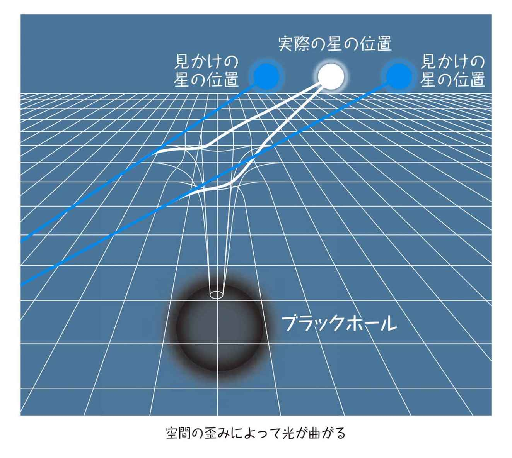

24
ポール・ディラック
（1902～1984） Paul Adrien Maurice Dirac
反粒子の発見
ポール・ディラックは、イギリスの物理学者で、反粒子の存在を予言したことで知られています。反粒子とは、宇宙にある物質を構成している基本粒子、たとえば電子や陽子や中性子などとは反対の粒子です。何が反対かというと電荷です。電子はマイナスの電気を持っていますが、その反対の反電子（陽電子）は、プラスの電気を持っています。
現在、反粒子は電子だけでなく、陽子・光子・ニュートリノ・クォークなどすべての粒子に反粒子があることが分かっています。
しかし、実際には、反粒子はこの宇宙にはほとんどありません。もし、この世界にたくさんの反粒子があったら、粒子と反粒子がぶつかって、対消滅という現象を起こし、一瞬のうちにエネルギーを放出し消滅してしまいます。宇宙が誕生したときに、粒子と反粒子が完全に同じ数できていたら、すべての粒子が対消滅を起こして消えてしまうはずです。そうすると、この宇宙には、物質は存在しないはずです。
今、この宇宙があるのは、宇宙が誕生したときに、何らかの理由で粒子の方が少しだけ多く残ったためです。その粒子からこの宇宙が生まれました。
逆に反粒子の方が少し多かったなら、反粒子、反物質からできた反宇宙になっていたかもしれないのです。
ディラックは1928年、シュレーディンガー方程式に特殊相対性理論を取り込んだディラック方程式を発表しました。しかし、この方程式を解くと、電子がマイナスの電気を持つ場合とプラスの電気を持つ場合の二つの解が出てくるのです。当時は、反粒子の存在は知られていませんでしたから、ディラックも悩みました。マイナスの電気を持つ電子はマイナスのエネルギーを持つということです。この電子に力を作用させると、作用した方向とは反対の方向に動くわけです。こんな粒子がはたして存在するのでしょうか。
ところが1932年、アメリカの物理学者カール・デイヴィッド・アンダーソン（1905-1991）は、宇宙空間からやってくる宇宙線が地球大気の上層で大気の原子にぶつかってできる二次宇宙線の観測をしていて、普通の電子とは反対の軌跡を示す反電子（陽電子）を見つけました。
宇宙線の中の陽電子は、霧箱という装置で観測しました。霧箱は1897年に、イギリスの物理学者チャールズ・ウィルソン（1869～1959）が発明したもので、内部を過冷却状態にした箱です。この中を荷電粒子が通過すると気体の分子がイオン化し、それが凝結核となって結露するため、軌跡が目に見えるようになります。発明者の名前を冠して「ウィルソンの霧箱」とも呼ばれます。この霧箱に磁場をかけておくと、電子と陽電子の軌跡はそれぞれ反対方向にカーブします。
これらの業績によって、ディラックは1933年に、アンダーソンは1936年にノーベル物理学賞を受賞しました。また、霧箱の発明者ウィルソンも、1927年にノーベル物理学賞を受賞しています。
ディラックは、数学の天才でしたが、性格は孤立しがちで寡黙な人でした。それは、彼の生い立ちと関係があります。ディラックの父親は、地元のブリストル大学のフランス語の教師でしたが、社会的コミュニケーションの得意な人ではありませんでした。家庭でも非常に厳格で高圧的な人でしたから、ディラックも口数の少ない、人付き合いの苦手な人になりました。
ちょっと変わり者のディラックでしたが、高校生の頃から数学と物理にすばらしい才能を発揮しました。ブリストル大学に入学して工学と数学を勉強し、その後、21歳でケンブリッジ大学の研究生になりました。ケンブリッジでは、当時、物理の最先端分野であった量子力学に触れることとなりました。そして、たぐいまれな集中力で量子力学を理解し、シュレーディンガー方程式に相対論が組み込まれていないことに気づいて、ディラック方程式を編み出したのです。
彼の信条は、物理法則は数学的に美しいものでなくてはならない、というものでした。
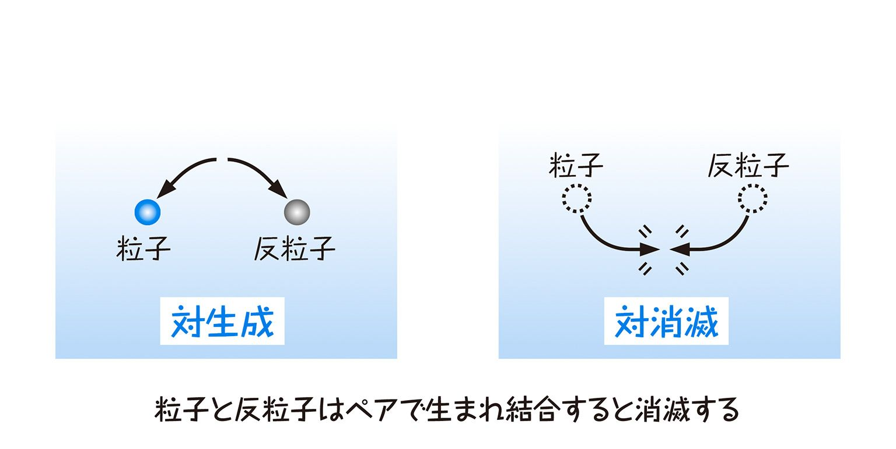

25
エドウィン・ハッブル
（1889～1953） Edwin Powell Hubble
膨張宇宙の発見
ハッブル宇宙望遠鏡をご存じの人も多いことでしょう。上空600kmを周回している、口径2.4mの宇宙望遠鏡です。地球の大気にじゃまされないため非常に高い分解能が得られ、100億光年を超えるような宇宙の果てに近いところにある暗い銀河まで鮮明に撮影することができます。この宇宙望遠鏡の名前は、エドウィン・ハッブルにちなんで名づけられました。
ハッブルは、宇宙が膨張している証拠を初めてつかんだ天文学者です。
ハッブルは、1889年、アメリカ・ミズーリ州で生まれ、大学では数学と天文学を専攻しました。その後、オックスフォード大学で法律を勉強して弁護士になりましたが、再び天文の世界に戻りました。1915年からシカゴ郊外のヤーキス天文台に所属、さらに1919年にはウィルソン山天文台に移って、本格的に天体の研究を始めました。ハッブルがウィルソン山天文台に来る２年前に、同天文台に口径2.5ｍの巨大な反射望遠鏡が設置されました。これは当時、世界最大の口径を持つ望遠鏡でした。
望遠鏡は、主鏡や対物レンズの口径（直径）が大きいほど、集光力（光を集める能力）と分解能（細かなところを見る能力）がよくなります。つまり大口径ほどより遠くの小さくて暗い天体を見ることができるのです。
ハッブルは、この巨大望遠鏡で、星雲（nebula）と呼ばれるぼんやりと微かに光っている天体を観測しました。当時、ケフェイド（ケフェウス型）変光星という、変光周期と明るさ（絶対等級）の間に一定の関係のある星が知られていました。この星の光度変化の周期と光度（実視等級）が分かれば、その星までの距離を知ることができます。まるで宇宙の物差しのような星なのです。
1923年、ハッブルはアンドロメダ銀河の中に、ケフェイド変光星を見つけました。そして、変光周期と光度変化から、アンドロメダ銀河までの距離を約90万光年と見積もりました。これは、私たちの銀河系の大きさ（直径10万光年）よりも大きいので、アンドロメダ銀河は銀河系の外にあるということが分かったのです。
我々の銀河系の外に銀河があることを発見したことがハッブルの最初の業績です。ハッブルは、銀河系の外にある銀河を調べ、形の違いから銀河を、楕円銀河・レンズ状銀河・渦状銀河・棒渦状銀河・不規則銀河の５つに分類しました。我々の銀河系は、渦状銀河か棒渦状銀河であると考えられています。
そして1929年、ハッブルは天文学史に残る大発見をします。
彼は、ケフェイド変光星を利用して銀河系の外にある18個の銀河までの距離を測り、さらにスペクトル写真を撮ってみたところ、スペクトル線が通常よりも赤、つまり波長の長いほうにずれていることを発見しました。スペクトル線が赤のほうにずれることを「赤方偏移」といいます。
この赤方偏移の値を調べたところ、遠方の銀河ほど速い速度で遠ざかっていることが分かりました。音の「ドップラー効果」と同じで、光も遠ざかっていくときは、波長が伸びて赤のほうにずれるのです。詳しく観測したところ「銀河の遠ざかる速さと銀河までの距離は正比例する」ことが分かりました。これがハッブルの法則です。
遠い銀河ほど速い速度で遠ざかっているということは、宇宙が膨張していることを示しています。宇宙の膨張は、ちょうど焼いているぶどうパンのようなイメージです。熱を加えて生地がだんだん膨らんでくると、中にある干しぶどうどうしの間隔がどんどん開いていきます。干しぶどうを銀河と考えればいいわけです。宇宙がどんどん膨張しても、銀河一個一個は、大きな質量が集まって強い重力で結ばれているので、銀河の中にある星と星の間隔が開くわけではありません。まさに、ぶどうパンの中の干しぶどうのように、干しぶどうどうしの間隔だけが開いていくのです。
ハッブルの法則が発表される12年前の1917年、アインシュタイン（→「23 アルバート・アインシュタイン」）は、重力方程式（重力と時空の関係を表わす式）に、宇宙項という一項をつけ加えていました。元の方程式では、宇宙は膨張したり縮んだりする解を持つことが分かったので、宇宙は静止しているものだと考えていたアインシュタインは宇宙項を加えて、無理矢理、静止宇宙になるように方程式を変えたのです。
しかし、アインシュタインはハッブルが宇宙の膨張を発見したことを知って、「宇宙項の導入は生涯最大の過ちだった」と言いました。
ハッブルの膨張宇宙の発見は、その後のビッグバン理論（→「28 ジョージ・ガモフ アーノ・ペンジアス ロバート・ウィルソン」）につながっていく重要な発見でした。

26
マリー・キュリー
（1867～1934） Marie Curie
ラジウムの発見
マリー・キュリー（ポーランド名：マリア・スクウォドフスカ）は、ポーランドのワルシャワで生まれ、フランスで活躍した女性物理学者です。両親とも教育者という家庭に生まれたマリーは、子どもの頃から優秀な生徒でした。1891年、24歳のとき、一足先にパリで医学を学んでいた姉のブロニアの勧めでパリに出て、ソルボンヌ大学に入学しました。当時のポーランドはロシアの支配下にあって、ポーランド人の自由が制限され、ワルシャワ大学も、いくら優秀とはいえ女性を受け入れてはくれませんでした。パリに出たマリーは、ソルボンヌで学んだ後、ワルシャワに帰るつもりでいました。
しかし1894年、ソルボンヌを優秀な成績で卒業してまもなく、マリーはピエール・キュリーと出会い恋に落ち、翌年結婚しました。ピエールは、圧電効果の研究や温度と磁性の研究ですでに大きな業績をあげていた物理学者でした。
1896年、アンリ・ベクレル（1852～1908）が放射能を発見しました。レントゲンがX線を発見したのは1895年のことでしたが（→「19 ウイルヘルム・レントゲン」）、ベクレルは、真空放電管からX線が出るときに同じ場所から蛍光も出ることから、蛍光とX線は同じメカニズムで出ているのではないかと考えました。そして、蛍光を発する物質をいろいろ調べていたところ、ウランの化合物が、光の刺激を与えなくても放射線を出していることを発見したのです。
この発見の報を受けて、マリーとピエールは、ウランのように自然に放射線を出す物質をしらみつぶしに調べました。
マリー・キュリーが選んだ研究のテーマは、ベクレルが発見した放射能の正体をより詳しく解明することでした。ベクレルは、ウランが出す放射線を発見しましたが、マリーは、ほかにも放射線を出す物質があるに違いないと確信し、ウラン鉱石の一つであるピッチブレンド（瀝青ウラン鉱）という物質に注目しました。ピッチブレンドが出す放射線の強さは、ピッチブレンドが全部ウランでできているとしても、それをはるかに上回るほど強力でした。マリーは、ピッチブレンドには、ウラン以外の強力な放射線を出す物質が含まれているに違いないと考え、その新物質を分離する作業を始めました。
実際の作業は、たいへんでした。大量のピッチブレンドを粉々に粉砕し、溶かしたり濾過したり沈殿させたりする肉体労働でした。そして、ついにポロニウムとラジウムという放射能を持つ新しい元素を発見しました。ポロニウムという名称は、マリーの祖国ポーランドにちなんでつけられました。放射能（radioactivity）とは、いまもよく使われる言葉ですが、これは放射線そのものではなく、放射線を出す能力のことです。
ベクレル、ピエール・キュリー、マリー・キュリーの３人は、放射能の発見によって、1903年のノーベル物理学賞を受賞しました。
マリー・キュリーは、1906年、夫のピエール・キュリーを交通事故で失います。なんと道路を横断中に馬車にひかれてしまったのです。失意のうちにあったマリーですが、1911年に、再びノーベル賞を受賞しました。今度は化学賞で、ポロニウムとラジウムの発見と、その性質の研究に関する成果が対象でした。
ノーベル賞を２回受賞したのは、マリー・キュリーを含めて４人だけです。しかも、キュリー家は、娘のイレーヌ・ジョリオ＝キュリー（1897～1956）、その夫のフレデリック・ジョリオ＝キュリー（1900～1958）の二人も共に原子物理学者で、1935年にノーベル化学賞を受賞しています。
20世紀前半は、原子物理学が猛烈に進化した時代でした。
イギリスの物理学者アーネスト・ラザフォード（1871～1937）は、1898年にウランから出るα線とβ線を発見し、また1911年には原子核を発見しました（→参照）。さらに1920年には中性子の存在を予言しました。中性子は1932年にラザフォードの弟子のジェームズ・チャドウイック（1891～1974）が発見しました。
1938年になると、ドイツのオットー・ハーン（1879～1968）とフリッツ・シュトラスマン（1902～1980）がウランの核分裂現象を発見。これが原子爆弾へとつながっていきます。
ラザフォードは、1908年にノーベル化学賞を、チャドウイックは1935年にノーベル物理学賞を、ハーンは1944年にノーベル化学賞を受賞しています。
マリー・キュリーは、1934年７月に66歳でその生涯を閉じました。
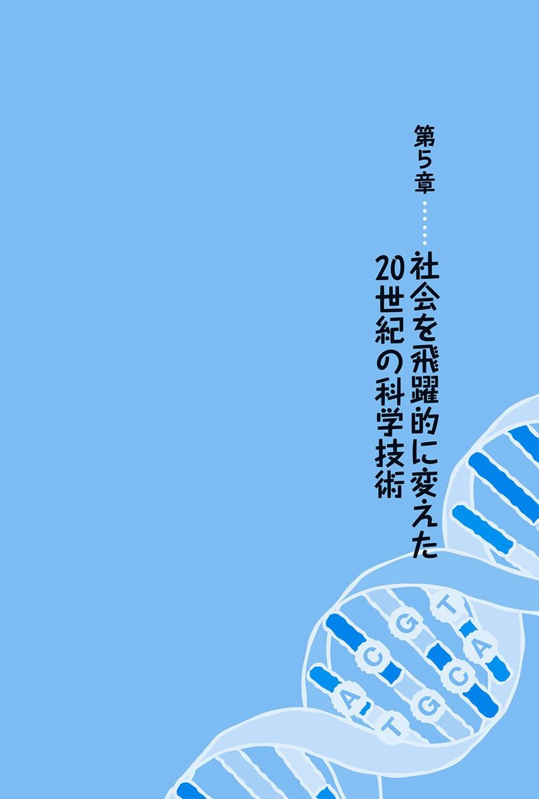
第５章
社会を飛躍的に変えた20世紀の科学技術
20世紀の科学技術は、ちょうど半ばを境にして飛躍的な進化を遂げます。20世紀の後半を象徴するものがデジタル技術です。デジタル技術によって、情報は０と１で構成されるビットに還元され、情報のすべてがビットで処理できるようになりました。これによって扱える情報量が爆発的に増大しました。1953年には遺伝子さえも４つのコードで書かれていることがわかりました。20世紀後半は、デジタル技術が世界をさらに大きく変えていった時代です。
また、この頃から、研究は一人の科学者によって行われるのではなく、数名の共同研究として行われるケースが多くなってきました。一人の手には余るほどに情報量が増えていったことと、情報の伝達速度が速まったため、ライバルに遅れをとらないよう、少しでも早く論文を発表する必要が出てきたからです。
ですから、この章の各項でとりあげる科学者は、一人ではなく複数の場合が多くなっています。
この章では、20世紀後半のデジタル技術の基礎をかたちづくっていった科学者を中心に、ビッグバン宇宙論のガモフ、DNAの二重らせん構造を発見した、ワトソン、クリックなどを紹介します。

27
アラン・チューリング
（1912～1954）Alan Mathison Turing
ジョン・フォン・ノイマン
（1903～1957）John von Neumann
クロード・シャノン
（1916～2001）Claude Elwood Shannon
コンピュータの発明
20世紀最大の発明は何かといえば、その一つは間違いなくコンピュータでしょう。コンピュータは社会の隅々にまで入り、短期間で世の中を大きく変えていきました。
現在のコンピュータと同じような仕組みのコンピュータが登場したのは、第二次世界大戦直後のことです。1946年につくられたペンシルバニア大学のENIAC（エニアック）が最初のコンピュータとされています。その後、メインフレームと呼ばれる大型のビジネス用コンピュータが普及していき、鉄道・銀行などの基幹的なインフラ部分がコンピュータで処理されるようになっていきました。1970年代が終わる頃には、個人向けのパーソナルコンピュータが登場し、1990年代から一般にも広く普及するようになっていきました。これがインターネットにつながるようになり、社会システムはさらに大きく変わりました。
最初のコンピュータが登場する少し前の1936年、イギリスの数学者アラン・チューリングが、コンピュータが行う情報処理の基礎理論を確立しました。彼が提示したのは、チューリング・マシーンという架空の計算機モデルです。
チューリング・マシーンとは、概略次のようなものです。
情報が書き込まれた無限に長いテープと、情報を読み書きするヘッドと、情報を記憶するメモリからできた機械を想定します。テープには数字や記号が書き込まれています。たとえば、テープの１番目の区画とヘッドが重なったとき、テープに「１」という数字が書いてあると、それを読み取りメモリに記憶します。２番目の区画がヘッドの上にきたら「＋」という記号が書いてありました。これを読み込んでメモリに記憶します。３番目の区画がきたら「２」が書いてありました。これも読み取って記憶します。そして４番目に「＝」がきたら、「＝」は、計算の答を出せという意味ですから、マシーンは計算をして次の区画に「３」を書き込みます。
こうすることで、どんな計算でもできるということを数学的に証明したのがチューリングです。現在のコンピュータも、基本はほとんどこれと同じ仕組みで動いています。
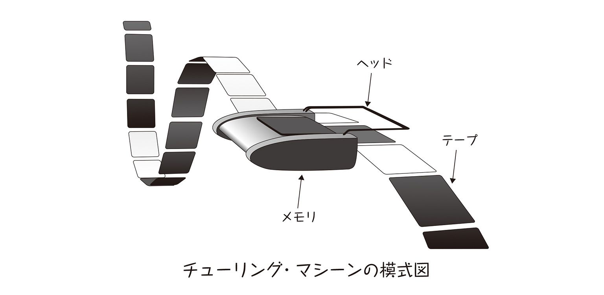
チューリング・マシーンで、「計算する」に相当する部分がプログラムです。このプログラムをメモリに内蔵させ、計算処理を順番にプログラムの指示通りに行わせるコンピュータを考え出したのが、ジョン・フォン・ノイマンです。
ノイマンは、ハンガリー出身のアメリカの天才的数学者で、数学・量子力学だけでなく、経済学の分野にゲーム理論を持ち込み、独自の数理経済学を確立しました。しかし、なんといってもノイマンの最大の業績は、計算機科学の分野にあります。現在のコンピュータのほとんどはプログラムを内蔵したノイマン型と呼ばれるコンピュータです。
ノイマン型コンピュータの原理はノイマンが数学的基礎を提示し、1949年頃、EDVAC（エドバック）というコンピュータの開発プロジェクトに加わっていたジョン・エッカート（1919～1995）、ジョン・モークリー（1907～1980）と共に考えたものです。
EDVACは、史上初のノイマン型コンピュータで、アメリカ陸軍が弾道計算のために発注したコンピュータです。先に、史上初のコンピュータはENIACであると書きましたが、これは、ノイマン型ではなく、コンピュータへの命令は外部の配線を人手でつなぎ替えて行っていました。しかも計算は２進法でなく10進法で行っていました。
情報処理でもう一人忘れてはならないのが、クロード・シャノンです。シャノンは、情報をビット（０と１の数字）で伝送することができることを数学的に示し、デジタル情報技術の基礎を築きました。
このように、チューリング、シャノン、ノイマン、エッカート、モークリーといった情報技術の先人たちのおかげで、今日、私たちがコンピュータをビジネスに使ったり、インターネットで調べ物をしたり買い物ができたりするのです。

28
ジョージ・ガモフ
（1904～1968） George Gamow
アーノ・ペンジアス
（1933～） Arno Allan Penzias
ロバート・ウィルソン
（1936～）Robert Woodrow Wilson
ビッグバン宇宙論の始まり
1929年、ハッブルが遠方の銀河ほどスペクトル線の赤方偏移が大きいことから、宇宙が膨張していることを発見しました（→参照）。膨張しているということは、時間を逆回しすると、宇宙はどんどん小さくなっていって最後は一点に凝縮されると考えることができます。宇宙の全質量が小さな点になるのですから、ものすごい高温の状態になります。
ロシア生まれのアメリカの物理学者ジョージ・ガモフはこのように考えて、宇宙は火の玉から始まったとする火の玉宇宙論を唱えました。ガモフは、最初は宇宙が誕生した直後の高温高圧の状態で起こっている核融合反応によって元素の起原を説明しようと考えていました。しかし、火の玉宇宙の考え方は、同時に新しいビッグバン宇宙論の始まりでもあったわけです。ガモフは、ハッブルの膨張宇宙とビッグバン宇宙の橋渡しをしたといえます。
ガモフは宇宙誕生時にビッグバンという大爆発があったとすると、そのときに出た光が宇宙の膨張とともに波長が伸びて長くなり、宇宙のいたるところから放射されているように見えるのではないかと考えました。これを宇宙背景放射といいます。宇宙マイクロ波背景放射（CMB，cosmic microwave background radiation）ともいいます。ガモフは、その放射の波長を温度に換算して５Ｋ（Ｋは絶対温度の単位ケルビン）と予測しましたが、その後、３Ｋであることがわかりました。正確には2.726K（この値は観測が進むにしたがって変わる）ですが、四捨五入してしばしば３Ｋと呼ばれます。
1964年、ベル研究所の技術者アーノ・ペンジアスとロバート・ウイルソン（1936～）は、マイクロ波アンテナのテスト中、正体不明のノイズに悩まされていました。最初は地上のノイズ源や機器そのものが出すノイズを疑いましたが、問題は見つかりませんでした。アンテナを調べてみたら鳩のフンがいっぱいついていました。これが原因かもしれないと考え、フンを取り除きましたが、それでもノイズはなくなりませんでした。
二人は、ノイズを詳しく調べて、ノイズと考えられていた電波は絶対温度３Ｋに対応する波長７cmの電波で、宇宙のどの方向からも均等にやってきていることを発見しました。
これが、ガモフが予言した宇宙背景放射でした。宇宙背景放射が発見されたことによってビッグバン宇宙論は確定的なものになっていきました。
ペンジアスとウィルソンは、宇宙背景放射の発見によって、1978年にノーベル物理学賞を受賞しています。
イギリスの天文学者フレッド・ホイル（1915～2001）らは、宇宙には始まりなどなく無限の過去から定常的に続いているという定常宇宙論を唱えていましたが、宇宙背景放射の発見によって定常宇宙論は崩れ去りました。
宇宙背景放射はその後、人工探査機によって宇宙空間からより精密に観測されるようになりました。1989年に打ち上げられたNASA（アメリカ航空宇宙局）のCOBE（Cosmic Background Explorer、コービー）宇宙背景放射探査機は、全天の背景放射を詳しく観測して宇宙背景放射に揺らぎがあることを発見しました。
また2001年に、同じくNASAがWMAP（Wilkinson Microwave Anisotropy Probe）探査機を打ち上げ、COBEよりも高い解像度で宇宙背景放射の分布を調べました。これによって宇宙が誕生したときの様子が詳しく分かるようになり、ビッグバンはいまから約137億年前に起こったこと、宇宙は永遠に膨張を続けることなどが分かりました。
また、宇宙に存在する物質の割合もWMAPによって正確に分かりました。それによると、通常の物質４％、ダークマター23％、ダークエネルギー73％です。
ダークマターもダークエネルギーも、いったい何であるかはいまのところ分かっていません。
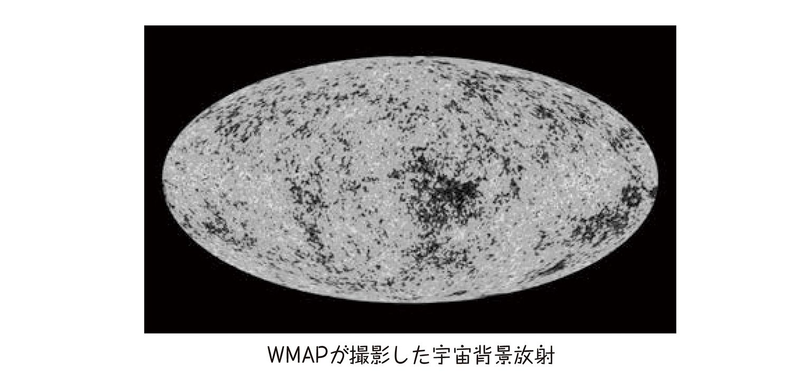

29
ジェームズ・ワトソン
（1928～）James Dewey Watson
フランシス・クリック
（1916～2004）Francis Harry Compton Crick
モーリス・ウィルキンス
（1916～2004）Maurice Hugh Frederick Wilkins
ロザリンド・フランクリン
（1920～1958）Rosalind Elsie Franklin
DNAの二重らせん構造を発見
1953年４月、イギリスの科学雑誌『ネイチャー』に画期的な論文が発表されました。「デオキシリボ核酸（DNA）の構造」という、たった１ページの論文でしたが、この短い論文が生物学の世界を大きく変えました。そしてその後、分子生物学という分野が大きく発展していきました。バイオテクノロジーも、遺伝子組み替えも、クローン技術も、ヒトゲノムの解明も、すべてこの論文から始まったといっても過言ではありません。
この論文を書いたのは、ジェームズ・ワトソンとフランシス・クリックという生物学者で、25歳と37歳の若者でした。
ワトソンは、シカゴ大学卒業後インディアナ大学で学位を得、その後、イギリスに移って、クリックとともに核酸の分子構造の研究にいそしみました。クリックと毎日議論を重ね、遺伝子の模型を手で組み立てながら考えました。その結果、「遺伝子の正体はDNAであり、それは二重らせんの形をしている。そして遺伝に関する情報は、２本の鎖をつなぐ塩基の配列によって決まる」という結論を出しました。
この結論を得るときに、大きな助けになったのは、物理学者で結晶学が専門のロザリンド・フランクリンが撮ったDNAのX線回折写真でした。X線が回折するということは、DNAの内部に何らかの規則的な構造があるということを意味しています。
1895年にレントゲンがX線を発見してから17年後の1912年、ドイツの物理学者ラウエ（1879～1960）が結晶にX線を当てると回折を起こす現象を発見しました（→参照）。回折とは、光などの波の性質を持つ電磁波が、物体の端を通過するとき、一部が物体の影の部分にまで回り込む現象です。X線は波長が極めて短いので、X線回折の手法を使うと、ミクロのサイズの結晶構造を知ることができます。ラウエは硫化亜鉛の結晶にX線を当てて回折像を写真に撮り、結晶構造を明らかにしました。X線解析は、1950年代には、生物組織の研究にも用いられるようになっていました。
ロザリンド・フランクリンは、鉱物から生体にいたるまでさまざまな物質の結晶構造をX線回折法によって解析していました。クリックとワトソンが、DNAの構造解明に頭をひねっていた頃、彼女はDNAのX線回折写真を撮っていました。この写真を、フランクリンの同僚であった物理学者モーリス・ウィルキンスが、彼女の許可なくワトソンとクリックに見せたのです。ワトソンとクリックはこの写真を重要な手がかりとして、DNAの二重らせん構造を発見しました。
フランクリンとウィルキンス、ワトソン、クリックの３人の間には、ドロドロとした人間模様があったようですが、いずれにしろ、DNAの二重らせん構造の発見には、フランクリンの寄与が非常に大きかったことだけは確かです。
ワトソン、クリック、そしてウィルキンスの３人は、1962年にノーベル生理学・医学賞を受賞しますが、フランクリンの名はそこにはありませんでした。その４年前の1958年に、37歳の若さで癌でこの世を去っていたのです。X線回折の実験で放射線を浴びすぎたのが原因ではないかといわれています。
ワトソンとクリックが発見したDNAの二重らせん構造とは、糖でできた二本のねじれた鎖の間に、４つの塩基、アデニン（A）・チミン（T）・グアニン（G）・シトシン（C）が、AとT、GとCという２つのペアとなってはしごのようにつながった構造をしているというものです。そして、この４つの塩基の配列によって遺伝情報が決まります。
二重らせんの発見の後、生物学を分子レベルで研究する分子生物学が発達し、さらには、DNAの塩基配列（ゲノム）の解明が進んでいきました。2003年には30億あるといわれる人間のヒトゲノムの塩基配列がすべて解明され、現在は、配列の各パーツが何を意味するのかを解明しようとしているところです。
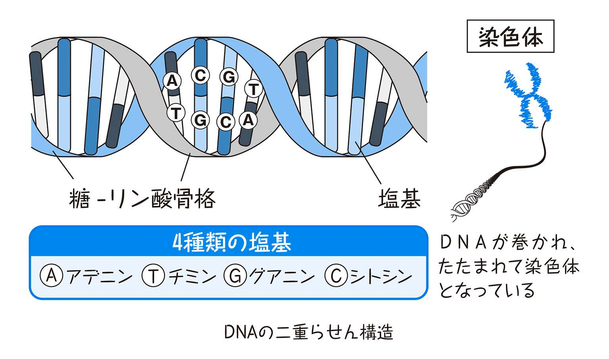

30
ウィリアム・ショックレー
（1910～1989） William Bradford Shockley
ジョン・バーディーン
（1908～1991） John Bardeen
ウォルター・ブラッテン
（1902～1987） Walter Houser Brattain
トランジスタの発明
20世紀の後半の50年は、電子工学とコンピュータサイエンスが飛躍的に進化した時代でした。同時に情報がアナログからデジタルへと移行し、情報科学という新しい分野が生まれました。またデジタル化された情報を処理するためにソフトウェアが必要になりました。ソフトウェアは、知を容易に具現化できるものであり、新しいアイデアが次々と現れ、デジタル機器を使いやすく便利なものにしていきました。
そのすべては「トランジスタ」の発明から始まります。トランジスタとは、ゲルマニウムやシリコンなどの半導体を接合（貼り合わせること）して、電流のオンオフを制御したり信号を増幅したりするものです。それまで真空管が果たしていた役目をトランジスタが受け継ぎました。
トランジスタは、真空管のようにフィラメントを持っていないので寿命が長く、発熱が極めて少なく、消費電力が少なく、小型で量産しやすいという大きな特徴があります。そのため、1950年代以降トランジスタは急速に普及していきました。最初は、鉛筆の先っぽくらいの小さな金属のチューブ状で、底から３本の足（電極）が出たものでした。しかし、どんどん小型化・微小化が進み、やがて集積回路に組み込まれるようになり、現在は、パソコンに搭載されている数cm角の一個の集積回路に、数億のトランジスタが集積されるようになっています。
トランジスタを発明したのは、アメリカのベル研究所のウィリアム・ショックレー、ジョン・バーディーン、ウォルター・ブラッテンの３人です。
1947年、バーディーンとブラッテンは、点接触型と呼ばれるトランジスタを発明しました。ゲルマニウムの結晶の一方の面（A）に電極をつけ、もう一方の面の一部に金を蒸着し、金の薄膜に接触させた電極（B）とゲルマニウムの面に接触させた電極（C）を取り付けたところ、Aの電極に与える電圧を変えると、電極BとCの間に流れる電流の値が変化したのです。トランジスタ原理が発見された瞬間でした。
バーディーンとブラッテンは、この実験をベル研究所の上司の前でやってみせましたが、このときショックレーはたまたま用事があって、同席していませんでした。ショックレーは個性の強い人でしたから、研究室内の人間関係が必ずしも良好ではなかったことも実験に立ち会えなかった原因のようです。
後でこの話を知ったショックレーは、奮発して猛烈な勢いで研究を進め、翌1948年には性質の異なる半導体をサンドイッチ状に貼り合わせた接合型と呼ばれるトランジスタを考案しました。電極を一点で半導体に接触させる点接触型よりも、接合型のほうが安定性が良好で、その後のトランジスタは接合型になっていきました。
トランジスタ発明の業績によって、ショックレー、バーディーン、ブラッテンの３人は、1956年にノーベル物理学賞を受賞しています。
トランジスタはすぐに製品化され、真空管ラジオはソリッドステート（固体）化され、小型のトランジスタラジオなどのコンシュマー（一般消費者）向けの電気製品がたくさん登場してきました。日本でも1955年に東京通信工業（現在のソニー）が、初のトランジスタラジオTR-55を発売しました。
また、1957年には、東京通信工業の半導体研究者だった江崎玲於奈（1925～）が、量子論のトンネル効果（電子が絶縁体の壁をすり抜ける効果）を利用したエサキダイオードを発明しました。江崎氏はこの業績によって、1973年にノーベル物理学賞を受賞しました。
なお、トランジスタを発明した３人のうち、バーディーンは、超伝導現象の正体であるBCS理論の解明によって、1972年に２度目のノーベル物理学賞を受賞しています。
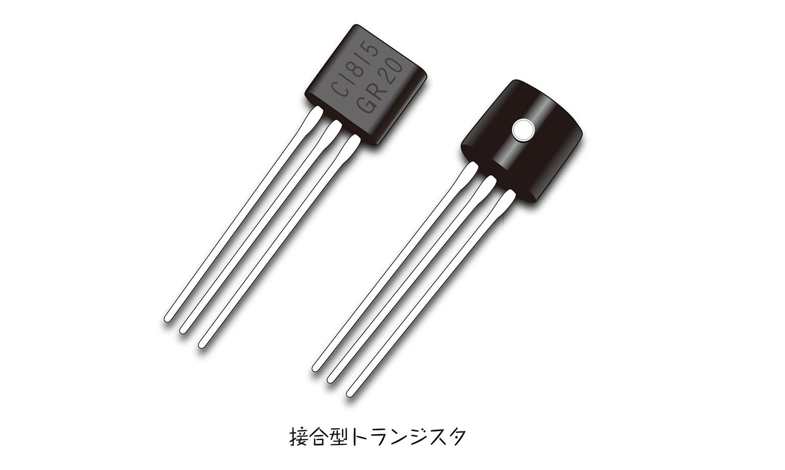

31
チャールズ・タウンズ
（1915～）Charles H. Townes
レーザーの発明
20世紀を代表する発明の一つにレーザーがあります。レーザーは、非常に応用分野が広く、レーザーの発明によって、科学技術、そしてそれを応用した工業製品が大きく進化していきました。
たとえば、ブルーレイ・DVD・CDなどの光ディスクは、レーザーが発するレーザー光を利用して情報を読み書きしています。インターネットに欠かせない光ファイバー通信もレーザー光があったからこそ実現しました。この他、レーザーは、材料加工、距離計測、医療用レーザーメス、さらには核融合などと非常に幅広い分野で活躍しています。
レーザー光とは規則正しく周期的に振動している振幅が一定の光です。普通の光は、いろんな色（波長）が混ざり合っており、明るさ（振幅）もバラバラです。しかし、レーザー光は単一周波数の混じりけのない単色光です。太陽の光をプリズムに通すと虹の七色に分かれて見えますが、レーザー光をプリズムに通しても、それ以上分解することはできません。
また、位相が揃った光なので遠くまで進んでも減衰や拡散が少ないという性質を持っています。そのため、光通信や、遠距離の測距などにも使われます。アポロ計画では、月の表面に鏡を設置して、地球からレーザー光を当ててその反射から、月と地球の正確な距離が測られました。
身近なところでは、プレゼンテーションなどで使われるレーザーポインターも、拡散しにくいというレーザー光の性質を活かしたものです。
また、レーザー光は可視光や可視光に近い電磁波なので振動数が極めて高いため、振動数の低い電磁波に比べて、より多くの情報を乗せて伝送することができます。光ファイバーケーブルで大量の情報を送ることができるのもレーザー光があるからこそなのです。
レーザーはどのようにして発明されたのでしょうか。
第二次世界大戦時、防空のためにレーダーが登場し、より正確に敵機を捕捉するために、いっそうの性能向上が求められていました。当時、レーダーが使用していた電波の波長は、２mから数10cmくらいでしたが、より正確に対象物を捉えるには、もっと波長の短い（振動数が高い）電波が必要です。そのため、マイクロ波と呼ばれる波長30cm～１cm（１GHz～30GHz）の電磁波の研究が盛んに行われていました。その頃は、まだ半導体は登場しておらず、真空管を使っていましたから、マイクロ波を発振するのは難しかったのです。
そこで、アメリカの物理学者チャールズ・タウンズは、1951年、誘導放出という現象を利用して、マイクロ波を増幅できるのではないかと考えました。誘導放出というのは、原子に強い光や電磁波が当たると、エネルギーの高い軌道にある電子が下の軌道に移動し、このとき電子が持っていたエネルギーが放出されるという現象です。誘導放出は以前から知られており、アインシュタインが1917年に発表した論文で誘導放出に関する理論を確立しています。
しかし、この理論が実際にマイクロ波や光で実現できるとは当時は誰も想像できませんでした。
タウンズの著書『How the laser happened: adventures of a scientist』によると、一緒に歩きながらこの理論を耳にした物理学界の重鎮ニールス・ボーアは、「それは不可能でしょう」と言い、また情報理論の創始者ノイマンは「うまくいかないだろうね」と言ったといいます。
しかし、タウンズは研究を続け、ついに1954年、アンモニアメーザーで1.25GHzのマイクロ波を発振させることに成功しました。
この装置はレーザーではなくメーザーと呼ばれていました。メーザーは、"Microwave Amplification by Stimulated Emission of Radiation"の略で、誘導放出によってマイクロ波を発振させたからです。
６年後の1960年には、ヒューズ社の技術者T.H.メイマン（1927～ ）がルビーの結晶を用いて赤い光（波長694.3nm）のレーザーの発振に成功しました。今度は、マイクロ波ではなく光を発振させることができたため、"Light Amplification by Stimulated Emission of Radiation"と、最初の言葉が「マイクロ波」から「光」に変わりました。各単語の頭文字をとってLASERと呼ばれました。
1962年には、半導体レーザーが開発され、どんどん小型化・低消費電力化が進み、1980年頃からはコンシュマー向けの光ディスク装置やレーザープリンター、そして光ファイバーの伝送用など、幅広い分野でレーザーが大活躍していくようになりました。
タウンズは、同時期に別々にレーザーの理論を発明したソ連の物理学者２人とともに、1964年にノーベル物理学賞を受賞しました。
あとがき
本書は、古代ギリシャ時代から現代までの代表的な科学者をとりあげ、31項目にまとめたものです。１項目で一人の科学者をとりあげたものと、数名の科学者をとりあげたものがあります。また、本文の方にも関係する科学者が何人も登場してきます。
本書には、総勢100人を超える科学者が登場していますので、とりあえず、古代ギリシャから現代までの科学の歴史を人物を中心にして概観できるのではないかと思います。
本書では、科学者どうしがどのように影響を与え合ったのかということをできるだけ詳しく書こうと心がけました。
発明・発見は一人でできることは少なく、たいていは、先人たちの成果の上に立っており、とくに、近代以降は、同時代の科学者の成果を受けてそれを発展させることで新しい発明・発見が生まれる場合が多くなっていきます。
それにしても、17世紀から19世紀にかけての情報伝達速度の速さには驚かされます。現在は、インターネットや電話網という通信回線が世界の津々浦々にまで張り巡らされていますが、その当時は、無線通信も電話もありませんでした。
無線通信が実用化したのは、本書でも述べましたが、1888年のヘルツの火花式無線通信機からであり、実用的な遠距離通信に無線が使われるようになったのは、1901年にマルコーニが、大西洋を超えて通信を行ったのが最初です。アメリカのグラハム・ベルによって有線電話が発明されたのは1876年のことです。
ですから、電話も無線通信もなかったにもかかわらず、17世紀から19世紀の情報伝達速度は想像以上に速いのです。
たとえば、望遠鏡を初めて発明したのは、オランダのリッペルスハイで、1608年のことと言われていますが、翌年の1609年には、この情報を得たイタリアのガリレイが早くも自分で望遠鏡をつくっています。
また、1820年、デンマークのエルステッドが、1800年に発明されたボルタ電池を使って、電流と磁気の変化を発見するや、ただちにフランスのアンペールが追試を行いアンペールの法則を発見しています。
情報伝達の速度は時代が進むとともに加速し、19世紀の終わりから20世紀の初めにかけて、どんどん競争が激しくなっていきます。
そして、現在は、分野にもよりますが、即産業に結びつく固体物理などの分野では、１分２分のスケールで論文提出の競争が行われています。
では、電気的・電子的通信網のなかった17世紀～19世紀はどのようにして情報伝達を行っていたのでしょうか。ひとつは、馬などを使った流通網があると思われますが、そこで運ばれた情報の入れ物、つまりメディアは何だったかというと、やはり紙に印刷された書物だったと思われます。
15世紀半ばの、グーテンベルクによる活版印刷術の発明は、情報を広く、素早く、確実に伝えるのに非常に役だっていたのです。もしも、印刷術が無かったら、科学の発達はもう少しゆっくりしたものだったに違いありません。
このように科学の歴史を勉強すると、世界史の勉強も同時にできるのです。なぜなら、科学は、人間の生活と深く結びついているからです。
私たちは、中学や高校で、日本史や世界史を学びますが、実は科学史の勉強こそが、必要なのではないかと思います。科学の視点で歴史を見ると、これまで見えてこなかった事柄がずっと客観的に見えてくるようになるのではないでしょうか。
白鳥 敬（しらとり けい）
サイエンスライター。1953年富山県生まれ。富山中部高校、成蹊大学文学部日本文学科卒業。専攻は近代文学。出版社の編集者を経て、科学技術分野で執筆。著書に『こんなにおもしろい単位』『子どもの頭を育てる 科学のなんでだろう？』『図解でわかる航空力学』『大人の科学と学習 天気と気象』など多数。
［おとなの楽習］刊行に際して
［現代用語の基礎知識］は1948年の創刊以来、一貫して"基礎知識"という課題に取り組んで来ました。時代がいかに目まぐるしくうつろいやすいものだとしても、しっかりと地に根を下ろしたベーシックな知識こそが私たちの身を必ず支えてくれるでしょう。創刊60周年を迎え、これまでご支持いただいた読者の皆様への感謝とともに、新シリーズ［おとなの楽習］をここに創刊いたします。
2008年 陽春
現代用語の基礎知識編集部
おとなの楽習 偉人伝
科学の偉人伝
電子版発行日 平成28年７月１日
著 者 白鳥 敬
© Shiratori Kei
発行所 株式会社自由国民社
発 売 株式会社インプレス
装 画 長谷川義史